양자컴퓨터의 물리적 구현을 비교할 때 중요한 것은 얼마나 많은 큐비트를 만들었는지와 함께, 그 큐비트로 얼마나 정확한 계산을 얼마나 오래 지속할 수 있는지다. 트랩트 이온은 정밀한 제어와 유연한 연결, 중성원자는 큰 배열과 재배치, 초전도 회로는 빠른 연산과 반복 오류정정에서 강점을 보인다. 실리콘 스핀은 집적과 제어회로의 통합을, 광자는 광학적 연결과 대규모 상태 생성을 발전시키고 있다. 이 강점을 유지하면서 시스템을 확장하는 것이 각 플랫폼의 다음 과제다.

2026년에는 논리 큐비트와 오류정정의 실험 범위가 넓어졌다. 동시에 ‘논리 큐비트’라는 표현 안에 오류 검출, 후선택, 반복 오류정정, 논리 연산이라는 서로 다른 성취가 섞여 있다. 아래 비교는 이 조건을 구분한다. 각 플랫폼의 물리적 장점이 어떤 계산 능력으로 이어졌으며, 확장을 위해 어떤 검증이 필요한지를 평가한다.
실현 가능성과 파급력을 나누어 보는 우선순위
가까운 오류내성 계산의 진전을 읽을 때는 이온·초전도·중성원자를 중심 경로로, 보소닉 부호화를 자원 부담을 줄이는 교차 경로로 보는 것이 현재 실험 근거에 맞는다. 마요라나는 실현된다면 구현 비용을 크게 바꿀 수 있지만, 보호된 계산 큐비트를 입증하는 위험까지 함께 안고 있다. 이 구분은 아래 논문을 종합한 기술적 판단이며, 상용화 확률이나 출시 연도를 추정한 점수는 아니다.
| 비중을 두어 볼 경로 | 현재의 판단 근거 | 가까운 진전을 가를 지점 |
|---|---|---|
| 이온·초전도·중성원자 | 높은 정확도의 논리 연산, 반복 오류정정, 원자 보충과 배열 제어라는 서로 다른 강점이 실제 실험으로 축적됐다 | 여러 논리 큐비트의 깊은 계산에서 억제가 유지되고 유효한 논리 연산 수/초가 늘어나는가 |
| 보소닉 부호화 | 물리적 안정화와 오류의 비대칭성을 이용해 정정 자원을 줄일 경로가 있다 | 연산·측정·바깥 부호를 통합해도 오류 구조와 자원 이득이 남는가 |
| 마요라나 | 성공 시 보호·밀도·자원 요구를 바꿀 잠재력이 크며, 최근 판독과 결맞는 제어가 각각 발전했다 | 같은 장치에서 제어·보호·반복 연산의 정확도를 함께 입증하는가 |
| 실리콘 스핀·광자 | 반도체 제조와 광학 연결이라는 장기 확장 자산이 있다 | 제조·제어 기반의 이점이 손실과 측정까지 포함한 논리 오류 억제로 이어지는가 |
| 결함 중심·분자 등 | 통신 메모리나 특수한 상호작용처럼 구체적인 역할이 두드러진다 | 범용 컴퓨터의 규모 외에, 해당 역할에서 필요한 정확도와 처리량을 달성하는가 |
충실도는 우선 충족할 조건이지만 그 숫자 하나로 실용성을 정할 수는 없다. 정확도는 단일·이중·병렬 게이트와 판독·초기화·논리 연산을 나누어 보고, 제어 가능성은 상태 준비·중간 측정·실시간 분기·드리프트 보정과 반복 재현성으로 판단한다. 실행 현실성에는 냉각·이동·원자 보충·광자 손실·원격 연결 대기와 재시도를 포함한다. 확장 경제성은 수율·배선·광학·냉각·상태 공장까지 묶어야 한다. 이 네 관점이 달라지면 같은 게이트 충실도에서도 유용한 계산량이 달라진다.
용도에 따른 비중도 다르다. 깊은 적응형 논리 회로에는 정확도·연결·분기 비용이 중요하고, 격자형 다체 시뮬레이션에는 원자 배열의 기하학적 제어가 장점이 될 수 있다. 광자와 결함 중심은 통신과 메모리의 역할을 함께 평가해야 한다. 범용 계산 능력, 특정 Hamiltonian의 시뮬레이션, 통신 노드의 성과를 한 ‘큐비트 수’로 합산할 수는 없다.
원문에서 출발하는 질문
Tomer Itelson의 LinkedIn 글은 중성원자를 광학 집게로 포획하고 빈자리를 재배열하는 과정을 설명한다. 원자가 전기적으로 중성이어도 빛에 의해 유도되는 전기 쌍극자 때문에 광학적 힘을 받는다. 적절한 파장과 광장 분포에서는 집중된 빛이 포획 퍼텐셜을 만든다. 원자종과 파장에 따라 퍼텐셜의 부호와 성질이 달라지므로 모든 레이저가 원자를 중심으로 끌어당기는 것은 아니다. 원문
LinkedIn 글이 사진 출처로 제시한 Norcia 등의 Iterative Assembly of ¹⁷¹Yb Atom Arrays with Cavity-Enhanced Optical Lattices는 광학 집게와 공진기로 강화한 광격자를 결합하고, 저장소 배열에서 원자를 반복 공급했다. 1,225개 포획 자리에서 자리당 약 99% 점유율을 보였다. 이 수치는 배열을 채우는 능력이다. 1,225개의 논리 큐비트나 같은 수의 고충실도 얽힘 연산을 뜻하지 않는다. 논문이 제시한 계산 중 원자 재공급의 가능성도 배열 점유율 시연과 구분해야 한다. PRX Quantum 5, 030316, 2024, 저자 공개본
이 글에서 ‘큐비트 소스’는 양자정보를 담는 물리계와 그 정보를 제어하는 플랫폼으로 해석한다. 광자 분야에서 말하는 단일광자 소스는 이보다 좁은 개념이다.
플랫폼을 구분하는 네 가지 층
큐비트는 추상적으로 두 상태의 중첩 α|0⟩ + β|1⟩이다. 실제 장치는 이 두 상태를 물질이나 빛의 자유도에 대응시켜야 한다. 원자 자체가 놓인 자리와 큐비트 상태는 대개 다르다. 원자가 같은 자리에 있어도 내부 스핀이나 전자 상태의 중첩을 가질 수 있다.
| 층 | 핵심 질문 | 예시 |
|---|---|---|
| 물리계 | 무엇이 양자정보를 담는가 | 이온, 중성원자, 초전도 회로, 전자 스핀, 광자 |
| 부호화 | 어떤 상태를 0과 1로 정하는가 | 초미세 상태, 핵스핀, 회로의 에너지 준위, 광자 경로, 진동자 상태 |
| 연결과 연산 | 두 큐비트를 어떻게 얽히게 하는가 | 공유 운동, Rydberg 상호작용, 전기적 결합, 교환 상호작용, 광학 간섭 |
| 오류정정 | 오류를 어떻게 검출하고 억제하는가 | surface code, color code, qLDPC, cat 및 GKP 부호, 소실 검출 |
보소닉 큐비트는 별도의 재료 이름이 아니다. 진동자의 많은 상태를 이용하는 부호화 방식이며, 초전도 마이크로파 공진기와 광학 모드 모두에 구현할 수 있다. GKP 역시 특정 장비 회사나 물질을 가리키지 않는다. 위상 큐비트의 ‘위상 보호’와 surface code 같은 오류정정부호의 위상적 구조도 서로 다른 개념이다.
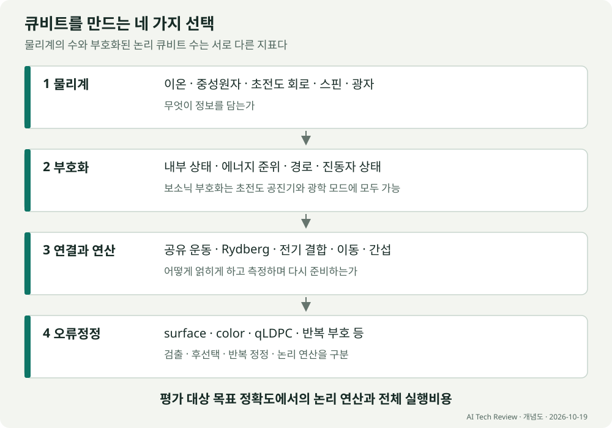
두 상태를 고르고 제어하고 읽는 공통 물리
실제 원자·회로·전자기장은 대개 두 상태보다 훨씬 큰 Hilbert 공간을 갖는다. 큐비트를 만든다는 것은 그 안에서 제어 가능한 두 차원 부분공간을 고르고, 나머지 자유도와의 결합을 관리하는 일이다. 아래 부호화 수식의 아래첨자 L은 선택한 두 차원 공간의 이름이며, 그 표기만으로 반복 오류정정의 성공을 뜻하지 않는다. 그 두 상태가 반드시 입자의 두 위치이거나, 항상 에너지의 바닥 두 준위인 것은 아니다. 내부 스핀, 회로의 고유상태, 두 광학 모드의 점유, 여러 모드에 분산된 부호 공간이 모두 가능하다.
순수 상태는 $|\psi\rangle=\alpha|0\rangle+\beta|1\rangle$, $|\alpha|^2+|\beta|^2=1$로 쓴다. $|0\rangle$와 $|1\rangle$의 상대위상이 간섭과 연산에 관여하며, 모든 성분에 같은 전체 위상을 곱하는 것은 관측 결과를 바꾸지 않는다. 환경과 얽혀 혼합 상태가 되면 밀도행렬 $\rho$가 필요하다. 두 차원 안에서는 $\rho=(I+\mathbf r\cdot\boldsymbol\sigma)/2$로 나타낼 수 있고, $I$는 항등 연산자, $\boldsymbol\sigma$는 Pauli 행렬, $\mathbf r$은 길이가 1 이하인 Bloch 벡터다. 이 구의 방향은 상태 공간의 좌표이며 전자나 원자가 실제 공간에서 같은 방향으로 돈다는 뜻은 아니다.
계산 부분공간 안의 유효 Hamiltonian을 $H_{\rm q}=E_{\rm av}I+\hbar\mathbf h\cdot\boldsymbol\sigma/2$로 쓰면, 제어장은 벡터 $\mathbf h$의 성분과 시간 변화를 조절한다. $E_{\rm av}$는 공통 에너지, $\mathbf h$의 각 성분은 각주파수 단위이며 $\hbar$는 환산 Planck 상수다. 일정한 축 $\mathbf n$에 대한 이상적 회전은 $U=\exp[-i\theta\mathbf n\cdot\boldsymbol\sigma/2]$다. 실제 구동은 다른 준위로의 누설, 이웃 큐비트에 대한 비의도적 작용, 제어장의 잡음을 함께 일으킬 수 있다. 두 큐비트를 얽히게 하려면 단일 큐비트 제어 외에 공동의 상호작용이나 측정 자원도 필요하다.
판독은 중첩의 두 복소 진폭을 한 번에 꺼내는 과정이 아니다. 이상적인 계산 기저 측정은 $|0\rangle$와 $|1\rangle$의 확률을 각각 $\rho_{00}$와 $\rho_{11}$로 준다. 상대위상까지 추정하려면 동일하게 준비한 여러 상태를 서로 다른 기저에서 측정해야 한다. 실제 장치는 내부상태를 형광 수, 전하 센서 신호, 마이크로파의 위상, 광자 계수 같은 고전적 기록에 대응시킨다. 비파괴 또는 quantum-nondemolition 판독도 모든 중첩을 보존한다는 뜻은 아니다. 이상적 측정 과정이 해당 관측량의 고유값을 바꾸지 않아 반복 판독에서 같은 값을 얻는다는 뜻이며, 검출 중의 이완과 측정의 역작용은 따로 평가해야 한다. 연속 QND 판독과 이완의 원 연구
수명에도 물리적 의미를 붙여야 한다. $T_1$은 선택한 이준위 모형에서 들뜬 상태 점유가 평형으로 돌아가는 시간이고, $T_2$는 지정한 조건에서 비대각 성분의 결맞음이 줄어드는 시간이다. 에너지 이완과 순수 탈위상이 독립적으로 지수 감쇠하는 Markov 모형에서는
$$ \frac{1}{T_2}=\frac{1}{2T_1}+\frac{1}{T_\phi}. $$여기서 $T_\phi$는 순수 탈위상 시간이다. 느린 주파수 변동이 포함된 Ramsey의 $T_2^*$, echo 펄스로 잡음을 일부 거른 시간, 구동 중 Rabi 감쇠는 서로 다른 실험이다. 비지수 감쇠·누설·입자 소실까지 있는 장치에 위 식을 그대로 적용할 수는 없다. 이어지는 각 플랫폼의 ‘긴 수명’은 어떤 상태 또는 관측량을, 어떤 구동·판독 조건에서 유지했는가와 함께 읽어야 한다. Ramsey의 분리 구동, Hahn의 echo
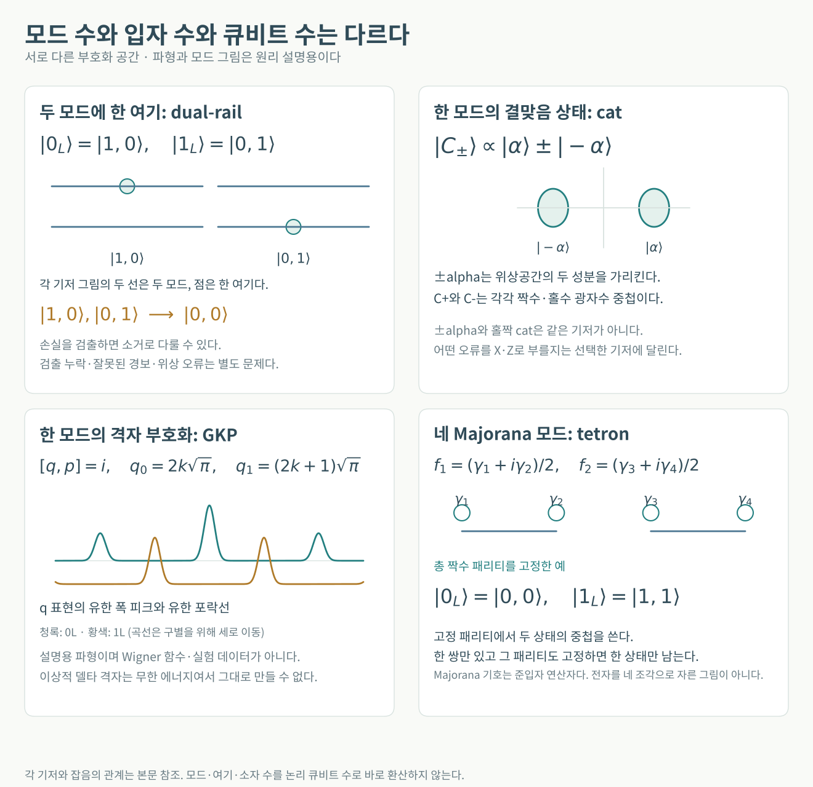
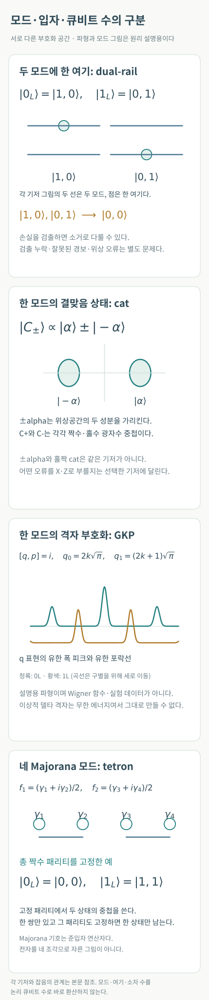
현재 성과를 비교할 때 읽어야 할 지표
물리 큐비트 수와 논리 큐비트 수. 여러 물리 큐비트를 한 논리 큐비트에 사용할 수 있다. [[n,k,d]] 부호는 n개의 물리 큐비트에 k개의 논리 큐비트를 담고 코드 거리 d를 갖는다. 작은 d로 k를 크게 만든 장치와, 큰 d로 오류를 강하게 억제한 장치는 성격이 다르다. 실제 장비에는 데이터 외에 측정 보조 큐비트, 이동 공간, 상태 공급 장치도 필요하다.
게이트 충실도와 시스템 오류. 단일 큐비트 99.99%는 두 큐비트 게이트나 전체 회로의 정확도가 아니다. 분리 실행한 randomized benchmarking 결과가 병렬 실행, 측정, 이동, 재초기화까지 포함한 정확도를 보장하지 않는다. 평균값과 가장 좋은 한 쌍의 수치도 구분해야 한다.
오류 검출과 오류정정. 검출은 이상을 알아내는 것이고, 정정은 검출 기록에서 오류를 추론해 물리적으로 보정하거나, 이후 연산과 판독에 반영할 보정 정보를 Pauli frame에 기록하는 것이다. 후선택은 이상이 있는 실행을 버린다. 후선택으로 조건부 정확도가 높아지면 채택률과 전체 실행비용을 함께 보고해야 한다. 다만 상태 준비처럼 실패를 미리 알아내 재시도하는 절차는 실제 오류내성 설계에서도 유용하다.
코드 확대와 시간 확대. 더 큰 코드에서 논리 오류가 작아지는 것과, 같은 코드가 수십·수백 라운드 동안 잘 유지되는 것은 별도의 검증이다. 짧은 실험에서의 오류 억제가 긴 계산에서도 유지되는지 확인해야 한다. 반복 부호가 한 종류의 오류만 보호한 결과도 임의의 양자 상태에 대한 완전한 보호와 구분한다.
논리 메모리와 논리 계산. 상태를 보존하는 실험에 이어 논리 큐비트 사이의 연산, 비Clifford 연산, 측정 결과에 따른 분기까지 필요하다. Clifford 연산만의 큰 회로는 특정 조건에서 고전적으로 효율적으로 모사되므로, 그 규모만으로 유용한 계산 우위를 판정할 수 없다.
공통적으로 볼 항목은 논리 오류율, 오류정정 주기, 코드 거리, 연속 라운드 수, 논리 게이트 오류, 후선택 채택률, 연결 비용, 보정 및 재시도까지 포함한 실행시간이다. 99.9% 같은 하나의 수치는 모든 플랫폼에 공통인 오류내성 합격선이 아니다. 문턱값은 부호, 오류의 상관관계, 측정·누설·소실, 디코더와 연결 방식에 달려 있다.
주요 플랫폼의 비교
아래 평가는 뒤의 논문들을 종합한 해석이다. 각 행의 성과는 서로 다른 규모와 프로토콜에서 측정되었으므로 숫자로 단일 순위를 매기지 않는다.
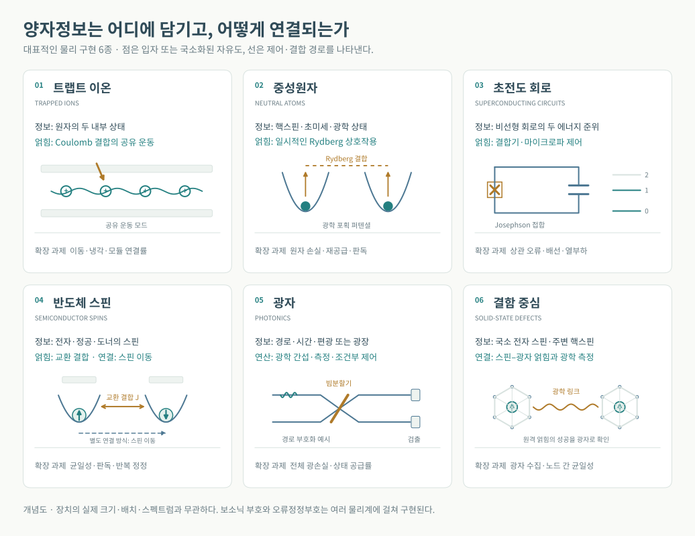
| 플랫폼 | 양자정보와 얽힘 방식 | 현재 확인된 강점 | 다음 확장 과제 |
|---|---|---|---|
| 트랩트 이온 | 원자 내부 상태와 공유 운동 또는 모듈 간 광자 연결 | 높은 정확도, 긴 기억, 유연한 연결, 논리 연산 | 이동과 냉각 시간, 광학 제어, 모듈 연결 속도 |
| 중성원자 | 초미세·핵스핀·광학 상태와 Rydberg 상호작용 | 큰 배열, 재배치, 병렬 게이트, 논리 실험 | 원자 손실과 보충, 반복 측정, 균일한 게이트 |
| 초전도 회로 | 인공 원자의 준위와 결합기 | 빠른 반복 오류정정, 제어 생태계 | 상관 오류, 배선과 열, 보정, 여러 논리 큐비트 연산 |
| 보소닉 부호화 | 공진기·진동자 상태에 분산 부호화 | 오류 구조를 설계하고 물리 자원 절감 가능 | 보조 큐비트 오류, 논리 게이트, 모드 간 연결 |
| 반도체 스핀 | 전자·정공·도너 핵스핀과 교환·이동 | 작은 소자, 반도체 제조와 제어회로 통합 | 균일성, 판독, 배선, 두 오류축의 반복 정정 |
| 광자 | 경로·시간·편광 또는 연속변수 광장 | 네트워크 연결, 광학적 병렬화 | 광손실, 상태 소스, 검출·스위칭·지연선 |
| 결함 중심 | 다이아몬드 등의 전자·핵스핀과 광학 연결 | 메모리와 통신의 결합, 원격 연산 | 광자 수집, 노드 균일성, 원격 얽힘 공급률 |
| 위상 및 Majorana | 비국소 자유도와 패리티 | 보호 가능한 부호화의 잠재력, 패리티 판독과 최소 사슬의 결맞는 제어 | 위상성·보호·고정밀 연산의 통합 입증 |
마요라나 큐비트의 파급력과 실현 가능성
마요라나는 성공했을 때의 파급력이 크지만, 보호된 고정밀 계산 큐비트를 입증하는 선결 위험도 큰 경로다. 2026년에는 긴 패리티 안정성과 최소 Kitaev 사슬의 결맞는 제어가 각각 진전했다. 이들은 다른 장치·프로토콜의 결과이며, 한 장치에서 긴 결맞음과 고충실도 연산과 위상 보호를 함께 달성했다는 의미로 합칠 수 없다.
영모드와 고정 패리티의 부호화
이 문맥의 Majorana 영모드(MZM)는 초전도체의 전자·정공 성분이 결합한 저에너지 준입자 자유도다. 전자 한 개를 공간에서 두 조각으로 잘랐다는 뜻이 아니다. 이상적인 영모드 연산자는
$$ \gamma_j=\gamma_j^\dagger,\qquad \{\gamma_i,\gamma_j\}=2\delta_{ij} $$를 만족한다. 서로 떨어진 두 영모드로 복소 페르미온 모드 $f=(\gamma_1+i\gamma_2)/2$를 정의하면, 그 점유수 $n=f^\dagger f$와 쌍의 측정량은
$$ i\gamma_1\gamma_2=2n-1 $$로 연결된다. 여기서 페르미온 패리티를 $P=(-1)^n$으로 정의하면 $P=-i\gamma_1\gamma_2$다. 문헌에서 ‘쌍 패리티’에 붙이는 전체 부호는 정의에 따라 달라지므로 식과 점유수의 대응을 함께 밝혀야 한다. Kitaev 원 논문, 식 (1)–(2)와 점유수
한 쌍의 전체 패리티를 고정하면 남는 상태는 하나이므로 그것만으로 큐비트를 만들 수 없다. 네 영모드를 쓰는 tetron은 두 복소 모드 $f_{12},f_{34}$의 총패리티를 고정해도 두 상태가 남는다. 예를 들어 짝수 부문에서
$$ |0_L\rangle=|n_{12}=0,n_{34}=0\rangle,\qquad |1_L\rangle=|n_{12}=1,n_{34}=1\rangle $$을 선택한다. 두 상태 모두 같은 총패리티를 가지며, 총패리티가 고정되면 (12)와 (34)의 패리티는 독립적이지 않다. (12)와 (23)처럼 한 영모드를 공유하는 쌍을 택하면 서로 비가환인 논리 측정축을 구성한다. 부유 초전도 섬의 충전 에너지는 단일 전자의 출입을 억제해 이 총패리티 제약을 유지하는 수단이다. 네 영모드와 고정 패리티를 이용한 Majorana box qubit 제안
보호의 요점은 충분히 떨어진 영모드에 저장한 정보를 국소적인 패리티 보존 교란이 쉽게 구별하거나 바꾸지 못하게 하는 데 있다. 이를 위해 벌크 여기와 분리하는 에너지 갭, 영모드의 공간적 국소화, 충분한 분리 $L\gg\xi$, 낮은 여기 점유와 패리티 보존이 필요하다. 이상적인 긴 계에서는 영모드 파동함수의 겹침이 만드는 에너지 분리가 대략 $\delta E\propto e^{-L/\xi}$로 줄지만, 실제 계에서는 진동 인자·무질서·기생 결합·충전 효과도 작용한다. 유한 겹침은 상태 사이에 원치 않는 상대 위상을 쌓고, 준입자 유입에 따른 poisoning은 패리티 자체를 바꾼다. 갭을 닫거나 영모드를 접근시키는 제어, 측정 회로와의 결합도 보호 조건을 바꿀 수 있다. 따라서 긴 패리티 수명이 곧 임의의 중첩 상태의 결맞음이나 게이트 충실도는 아니다. 원형 큐비트의 보호·겹침·poisoning 검증법
이상적인 교환은 $U_{ij}=\exp(\pm\pi\gamma_i\gamma_j/4)$로 표현되고, 이웃한 교환의 순서를 바꾸면 결과가 달라질 수 있다. 교환 방향과 연산자 정의가 부호를 정한다. 영모드의 위치를 교환하는 braiding 외에, 보조 자원과 순차 패리티 측정으로 대응하는 변환을 구현하는 경로도 있다. 표준 MZM 인코딩에서 이런 보호된 braiding·패리티 측정 기반 Clifford 연산만으로는 보편 게이트 집합이 되지 않는다. 비Clifford 연산이나 magic state와 잔류 오류정정이 추가로 필요하다. 비가환 교환의 원 유도, 측정 기반 Clifford 제안, Clifford와 magic state의 보편성
성공했을 때 무엇이 달라지는가
파급력은 기존 범용 알고리즘의 구현 비용을 낮추는 데 있다. 마요라나라는 물리계 자체가 분자 계산이나 최적화에 새로운 알고리즘적 가속을 자동으로 주는 것은 아니다. 작은 소자 면적, 전기적 제어와 패리티 측정은 집적에 유리할 수 있지만, 반도체의 무질서·자기장·게이트 조정·판독 회로의 비용을 포함해야 한다. 보호된 Clifford 연산에 더해 비Clifford 자원과 잔류 오류정정도 필요하다. 로드맵이 제안하는 단일 큐비트 검증, 두 tetron 연산, 여덟 tetron 오류검출과 논리 오류정정은 각각 별도 이정표다. 로드맵 저자 공개본
현재 무엇을 어느 장치에서 입증했는가
| 연구 경로와 공개 상태 | 확인된 결과 | 결과가 말해 주는 범위 |
|---|---|---|
| Microsoft InAs–Al의 X·Z loop 측정. 2025년 사전공개, 2026년 10월 1일 Physical Review A 심사 채택 | X loop 수명 14.5 ± 0.3 μs, Z loop 수명 12.4 ± 0.4 ms. 적분 시간 2 μs 및 50 μs에서 operational assignment error는 각각 16%, 0.5% | 두 패리티 판독 경로의 성과다. 저자들은 빠른 교차 측정으로 X·Z의 비가환성을 확인하는 일을 다음 단계로 남겼다. PRA 채택 원고, 본문 |
| Microsoft InAs–Pb tetron. 2026년 6월 2일 사전공개 | Z 패리티 전환 시간 22 ± 1 s. 논문 제목은 20 Second Parity Lifetime in an InAs–Pb Tetron Device | 재료 변화로 패리티를 바꾸는 오류 경로를 크게 줄인 성과다. 임의 중첩의 T₂, 두 큐비트 게이트 충실도나 보호된 논리 수명이 아니다. 원문 |
| QuTech의 결합한 최소 Kitaev 사슬. 2026년 7월 10일 사전공개 | 결맞는 패리티 Rabi 진동. 대표 측정에서 진동 주파수 106.7(0.4) MHz, 감쇠 시간 T₂ᴿᵃᵇⁱ = 26 ± 2 ns | 시간 영역에서의 결맞는 제어가 출현했다. 짧은 최소 Majorana 사슬의 부분적 보호이며, 긴 계의 지수적 보호나 높은 게이트 충실도와 구분한다. 실험 원문 |
판독 오류 0.5%를 다른 플랫폼의 두 큐비트 게이트 오류 0.5%와 같은 것으로 놓아서는 안 된다. 패리티 전환과 신호 잡음을 포함한 판독 연산 오류, 임의 상태를 조작하는 연산 오류, 여러 번의 연산 후 남는 논리 오류는 서로 다른 지표다. 22초와 26 ns도 서로 다른 장치에서 다른 동역학을 측정한 값이므로 성능 비율로 계산할 수 없다.
2026년 2월의 Single-shot parity readout of a minimal Kitaev chain는 최소 사슬의 단발 판독을 발전시켰고, 7월 연구는 결합한 사슬의 결맞는 제어로 범위를 넓혔다. 따라서 현황은 패리티 판독에만 머무른다는 서술로 정리하기 어렵다. 관건은 결맞는 제어를 유지하면서 보호 이득과 연산 정확도를 함께 높이는가다. Nature 판독 논문
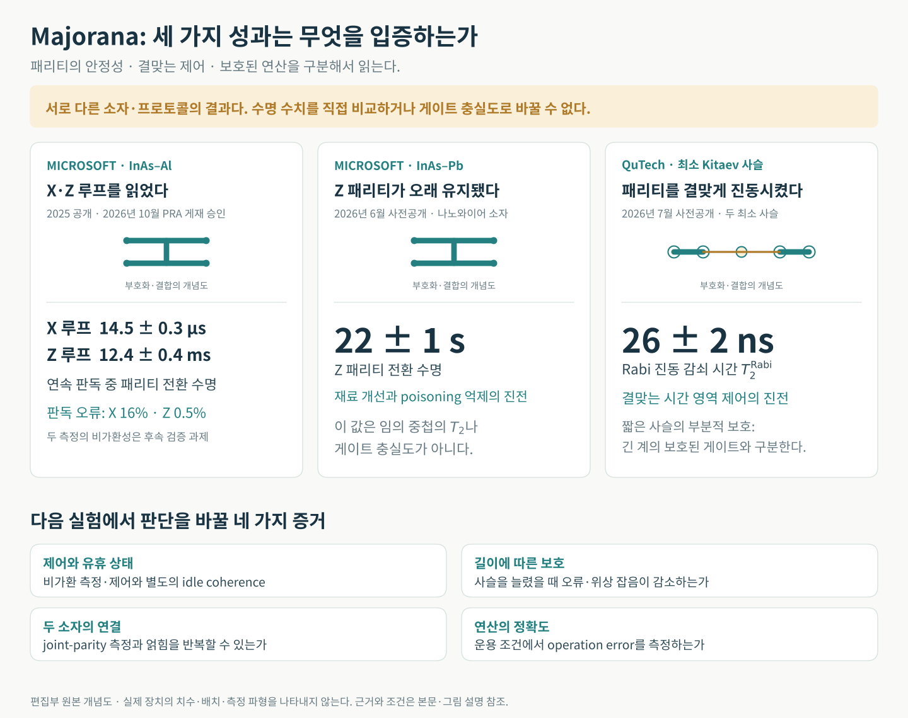
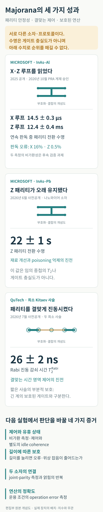
수명과 보호를 판별하는 최근 연구
2026년 10월 8일 사전공개된 Measurement-induced enhancement of the X-parity lifetime in a Majorana tetron는 측정 회로와의 결합이 패리티 전환을 느리게 만들 수 있음을 이론적으로 분석했다. 연속 판독 중 긴 패리티 수명을 유휴 상태의 T₂로 바로 읽기 어렵다는 의미다. 이 논문은 특정 Microsoft 장치의 실제 유휴 T₂를 측정한 결과는 아니다. 이론 원문
10월 12일의 Revealing topological protection through unprotected operations in a Majorana parity qubit도 이론 연구다. 결합을 조절하는 Rabi 연산 자체가 잡음에 취약할 수 있으므로, 사슬 길이에 따른 최적화된 진동 횟수나 충분히 분리한 상태의 Ramsey 결맞음이 어떻게 바뀌는지 보자는 검증법을 제안한다. 보호를 새로 실증한 논문이 아니라, 보호를 확인할 다음 실험을 구체화한 논문이다. 이론 원문
위상성에 대한 논쟁도 구분해 읽어야 한다. 2025년 Interferometric single-shot parity measurement in InAs–Al hybrid devices는 해당 측정만으로 저에너지 상태의 위상성을 결정할 수 없다고 명시했다. 2026년 6월 24일 Nature의 On the robustness of topological gap detection via transport는 수송 자료와 위상 갭 판별 분석을 비판했고, Microsoft Quantum의 답변은 안정된 자속 주기의 간섭 신호가 비위상적 설명을 제약한다고 반박했다. 이 논쟁은 Microsoft의 특정 자료와 해석을 검토하는 것이며 최소 사슬의 결맞는 제어 실험 전체를 부정하는 근거로 확대할 수 없다. 2025년 원 논문, Nature 비판, 답변
가까운 이정표와 중기 전망
마요라나의 전망을 바꿀 결과는 긴 수명 하나의 추가 기록보다 다음 검증의 결합이다. 측정 기반 경로에서는 서로 다른 축의 반복 측정과 비가환성, 펄스 제어 경로에서는 Rabi·Ramsey 제어와 잡음의 관계를 확인해야 한다. 그 위에 두 tetron의 joint-parity 측정과 얽힘, 반복 연산 오류, 여러 소자의 재현성이 필요하다. 사슬 길이·에너지 갭을 늘렸을 때 유휴 상태뿐 아니라 연산 중 오류도 줄어드는지가 보호의 경제적 가치를 결정한다.
Microsoft는 2026년 6월 Majorana 2 발표에서 2029년 확장 가능한 컴퓨터를 목표로 제시했다. 이는 기업의 개발 목표다. 발표의 ‘1,000배 신뢰성’ 표현을 게이트 충실도나 알고리즘 성공률의 1,000배 개선으로 바꾸어 읽을 수는 없다. 이 리뷰에서 가까운 관찰기간인 2027–2029년에 우선 확인할 것은 보호된 조작과 공동 측정의 재현 가능한 오류 자료이며, 대규모 상용 계산의 도래는 그 결과에 달린다. 회사 발표
현재 판단은 장기 파급력 때문에 높은 관심을 둘 가치가 있으나, 가까운 유용한 오류내성 계산의 기준 경로로 삼기에는 선결 검증이 더 필요하다는 것이다. 재료·제어·위상 보호의 성공이 한 장치에서 결합되면 평가가 크게 바뀔 수 있다. 아래의 이온·초전도·중성원자는 이미 쌓인 논리 처리 결과를 더 큰 계산으로 연결하는 과제의 비중이 상대적으로 크다.
자본과 산업 기반은 어디에 쌓이는가
투자는 연구를 지속할 여력, 제조시설과 제어 인력을 확보하는 능력을 보여 준다. 다만 기업 전체 조달액을 특정 큐비트의 연구비로 환산하거나, 민간 투자·정부 보조·매출·대출 약정을 합쳐 기술 순위를 만들 수는 없다. 다음은 규모와 산업적 성격을 보여 주는 선별 사례이며, 전 세계 투자액의 집계가 아니다. 금액은 모두 미국 달러다.
| 경로와 주체 | 확인된 자금·시설 신호 | 기술 평가에서의 의미와 한계 |
|---|---|---|
| 초전도 중심 제조 기반: IBM Anderon | 2026년 9월 16일 미국 CHIPS R&D 최종 지원 계약 최대 10억 달러, IBM의 추가 10억 달러 지원 계획. 300 mm 양자 파운드리에서 첫 웨이퍼 공정 시작 | 제조·패키징·수율 개발에 큰 자원이 들어간다. 지원 한도가 모두 지급되었거나 고수율 양산에 도달했다는 뜻은 아니다. NIST, IBM |
| 이온: Quantinuum | 2026년 6월 5일 IPO 종료. 2분기 SEC 공시상 IPO 조달 16억 2,880만 달러, 인수 할인·수수료 차감 후이며 기타 발행비용 차감 전 | 연구·상용화에 쓸 기업 자본이다. 하드웨어에 이미 집행한 연구비나 고객 매출과는 구분한다. SEC 10-Q |
| 중성원자: QuEra | 2025년 말 공식 결산에서 연중 신규 자본 2억 3,000만 달러 초과 확보 보고 | 오류내성 하드웨어와 배치·운영 역량을 개발할 여력이다. 초기 발표의 조건부 금액을 그대로 확정 자금으로 세는 대신 연말의 갱신된 발표를 사용했다. 회사 결산 |
| 광자: PsiQuantum | 2025년 9월 Series E 10억 달러 조달 발표 | 광자 칩과 시설을 대규모로 구축하는 경로에 자본이 모인다. 건설·제조 자본의 크기가 곧 공개 검증된 논리 계산 성능은 아니다. 조달 발표 |
| 실리콘 스핀: Quantum Motion | 2026년 5월 Series C 1억 6,000만 달러. 9월 추가 투자 유치 발표는 금액 비공개 | 실리콘 공정과 제어의 통합에 대한 산업적 기대를 보여 준다. 9월분을 임의 추정해 합산하지 않았다. 5월 발표, 9월 발표 |
| 마요라나: Microsoft | 2026년 9월 Maryland 연구센터 개소 및 DARPA 시험용 Majorana 2 제공 발표. 해당 발표에 마요라나 전용 투자액은 제시되지 않음 | 전담 시설과 외부 시험의 기반은 생겼다. 회사 전체 R&D나 지역 양자 생태계 예산을 마요라나 투자액으로 대입할 수 없고, 시험 참여 자체가 독립 검증의 성공은 아니다. 연구센터 발표 |
외부 검증의 흐름도 여러 경로에 걸친다. DARPA는 2026년 10월 7일 Atom Computing·Diraq·IBM·IonQ가 Microsoft·PsiQuantum에 합류해 QBI Stage C의 여섯 팀이 되었다고 발표했다. Stage B는 계획을 검토했고, Stage C에서는 하드웨어 시험이 시작된다. 이는 중성원자·스핀·초전도·이온·마요라나·광자의 계획이 검증 대상이라는 뜻이며, 여섯 경로가 실용성을 이미 입증했다는 판정은 아니다. DARPA 공식 발표
산업적 현실성은 지원과 조달이 실제 공정 수율, 자동 보정, 가동률, 연결 공급률과 오류내성 계산 비용의 개선으로 전환되는가로 확인해야 한다. 투자 흐름은 기술 평가의 한 축이지만, 보호와 정확도에 대한 실험적 증거를 대신하지 않는다.
트랩트 이온
물리 원리와 장점
트랩트 이온에서 포획되는 것은 원자의 질량중심이고, 계산 정보를 담는 것은 원자 내부의 두 양자상태다. 바닥 전자상태의 초미세 준위 두 개를 고르거나, 바닥상태와 수명이 긴 준안정 전자상태를 고른다. 초미세 준위는 전자와 원자핵의 각운동량 결합으로 생기므로 순수한 핵스핀과 같지 않다. 전하에 작용하는 포획장은 이 내부상태를 공간적으로 붙잡는 기반이다. 선형 Paul 트랩은 비균일한 RF 전기장이 만드는 유효 퍼텐셜로 방사 방향을, DC 전극으로 축 방향을 가둔다. 정적 전기장과 자기장을 결합하는 Penning 트랩은 다른 방식이다. Wineland 등, 포획과 내부상태 제어
단일 큐비트 연산은 두 준위 사이의 전이 진폭과 상대위상을 제어한다. 초미세 큐비트에는 공명 마이크로파나 두 광장의 주파수 차를 이용하는 유도 Raman 전이를, 광학 큐비트에는 해당 광학 전이를 구동할 수 있다. 공명하고 빠른 진동항을 버리는 회전파 근사에서 제어를 간단히 쓰면
$$ H_{\mathrm d}=\frac{\hbar\Omega(t)}{2}\left(e^{-i\phi}|1\rangle\langle0|+e^{i\phi}|0\rangle\langle1|\right). $$여기서 $\Omega$는 각주파수 단위의 Rabi 주파수, $\phi$는 구동 위상, $\hbar$는 환산 Planck 상수다. 공명 펄스의 면적 $\theta=\int\Omega(t)dt$가 회전각을, $\phi$가 적도면의 회전축을 정한다. Raman에서는 실제 광학 여기상태를 크게 점유하지 않고 두 장 사이의 결맞은 이광자 과정을 이용한다. Wineland 등, 전이 Hamiltonian과 Raman 제어
두 이온은 Coulomb 힘으로 결합하므로 변위가 독립적이지 않고 공유 정상모드를 이룬다. 모드의 진동 각주파수가 $\nu$일 때, 내부 전이 $\omega_{01}$ 근처의 carrier는 주로 내부상태만 바꾸고 $\omega_{01}\pm\nu$의 운동 측대역은 내부상태와 진동 양자수를 함께 바꾼다. Lamb–Dicke 매개변수 $\eta$는 구동의 유효 파수와 그 방향 영점운동 폭의 곱이다. $\eta\sqrt{2\bar n+1}\ll1$이면 운동에 따른 광학 위상 변화를 낮은 차수로 전개할 수 있다. $\bar n$은 해당 모드의 평균 진동 양자수다. Sørensen–Mølmer, 측대역과 Lamb–Dicke 근사
대표적인 Mølmer–Sørensen 게이트는 적색·청색 측대역 부근의 결맞은 구동으로 내부상태에 따라 방향이 달라지는 힘을 만든다. 그 결과 운동의 위치–운동량 위상공간에 상태별 궤적이 생긴다. 게이트 끝에 관련 모드의 궤적을 모두 닫으면 운동은 내부상태와 분리되지만 궤적의 면적에 해당하는 얽힘 위상이 남는다. 이상적인 두 큐비트 연산은 전체 위상을 제외하면
$$ U_{\mathrm{MS}}=\exp[-i\chi\,\sigma_{\varphi}^{(1)}\sigma_{\varphi}^{(2)}],\qquad \sigma_{\varphi}=\cos\varphi\,\sigma_x+\sin\varphi\,\sigma_y $$로 표현할 수 있다. $\sigma_x,\sigma_y$는 내부 큐비트의 Pauli 연산자, $\varphi$는 구동이 정한 스핀축, $\chi$는 누적 상호작용 위상이며 $|\chi|=\pi/4$는 최대 얽힘을 만들 수 있다. 모든 게이트가 운동 바닥상태를 요구하는 것은 아니다. 이 방식에서는 근사의 유효성과 최종 운동 분리가 핵심이며, 실제 가열·주파수 변동·불완전한 궤적 폐합은 오류를 만든다. Sørensen–Mølmer, 열운동에서도 가능한 게이트와 한계
판독에서는 내부상태를 광자 수의 차이로 바꾼다. 한 상태는 들뜬 준위와 순환전이를 반복해 형광을 내고, 다른 상태는 검출광과 결합하지 않는 dark 상태로 남는다. 초미세 큐비트의 한 성분을 준안정 준위로 옮기는 shelving도 이용한다. 검출기는 이온의 위치 자체가 아니라 이 상태 의존 형광을 읽으며, 광자 수집 부족·배경광·검출 중 상태 전이가 밝음/어두움 분포를 겹치게 한다. Myerson 등, 상태 의존 형광과 shelving
한 이온 사슬 안에서는 공유 운동을 통해 여러 쌍을 연결할 수 있다. QCCD 구조는 이온을 저장·연산·측정 구역 사이로 옮겨 필요한 쌍을 만난다. ‘all-to-all 연결’에는 이 이동과 스케줄링의 비용이 포함된다. 서로 다른 진공 장치 사이의 연결에는 광학 링크 같은 별도의 계층이 필요하다. 같은 동위원소의 내부 준위는 본질적으로 같지만 국소 빔·자기장·운동 가열은 균일하게 제어해야 한다.
논문이 보여주는 현위치
2026년 6월 17일 출판된 A 98-qubit trapped-ion quantum computer with all-to-all connectivity는 Helios의 98개 물리 ¹³⁷Ba⁺ 큐비트를 보고했다. 연산 구역 전체 평균 두 큐비트 게이트 불충실도는 7.9(2) × 10⁻⁴, 충실도로 약 99.921%였다. 단일 큐비트 불충실도는 2.5(1) × 10⁻⁵였다. 중요한 점은 한 쌍의 최고 기록에 이어 여러 구역과 이동형 구조의 시스템 성능을 평가했다는 것이다. Nature
2026년 9월 2일 사전공개된 Experimental validation of a compact fault-tolerant architecture for trapped ions는 20개 데이터 큐비트에 두 논리 큐비트를 담는 [[20,2,6]] C₄-Helix 부호를 사용했다. 안정자 측정 보조 자원은 별도다. 반복 오류정정의 오류는 논리 큐비트당 주기당 4.6 × 10⁻⁵로, 보고된 오차 구간은 +6.2/−2.6 × 10⁻⁵였다. 두 논리 큐비트 Clifford 연산 오류는 2.8 × 10⁻⁴, 구간은 +1.0/−1.6 × 10⁻⁴였다. 후선택 없이 해당 물리 기준선을 상회했다는 점이 중요하다. 이는 작은 논리 구성의 실험이며 더 개선된 하드웨어를 가정한 10⁻⁶∼10⁻⁸ 전망은 시뮬레이션이다. arXiv 사전공개
다른 방향의 규모 실험인 Computing with many encoded logical qubits beyond break-even는 48∼94개 부호화 논리 큐비트를 다룬다. 작은 거리의 오류검출 부호와 연결 부호, 후선택 조건을 사용하므로 94개의 강하게 오류정정된 논리 큐비트를 연속 운영했다는 의미로 읽으면 안 된다. 범용 연산을 다룬 별도 원고 Fault-tolerant execution of error-corrected quantum algorithms는 최대 12개 논리 큐비트와 97개 물리 큐비트의 회로를 보고했으며, 논리 T 게이트 불충실도는 약 2.6(4) × 10⁻³였다. 가장 큰 회로의 결과가 실용적인 계산 우위를 입증한 것은 아니다. 2026년 2월 25일 사전공개, 2026년 3월 4일 사전공개
모듈 연결의 기준 사례인 Distributed quantum computing across an optical network link는 약 2 m 떨어진 두 이온 모듈 사이에서 원격 CZ 게이트 충실도 86.2(9)%를 보고했다. 광자 얽힘 생성 성공을 기다린 뒤 gate teleportation을 수행했다. 원격 연결의 작동 원리를 검증한 결과이며, 각 모듈 안의 높은 게이트 충실도가 링크에서도 그대로 유지된다는 뜻은 아니다. Nature, 2025년 2월 5일
2026년 9월 11일 사전공개되고 10월 15일 개정된 Error Correction in a Distributed Quantum Computer는 광학 링크로 연결한 두 이온 모듈에서 원격 XX·ZZ 안정자 측정과 실시간 feed-forward를 수행했다. [[2,1,1]] 반복 부호에서는 검출·재시작을 사용했고, 알려진 Bell 상태에 가해진 단일 큐비트 Pauli 오류의 능동 정정도 다뤘다. 원격 안정자 측정이 실험 단계에 들어왔다는 진전이다. 임의의 미지 논리 상태를 연속 보호하는 완전한 분산 오류정정과는 구분한다. 저자 공개본 v2
확장 과제
이온 수를 한 사슬에서 계속 늘리면 운동 모드가 복잡해지고 개별 주소 지정과 병렬 연산이 어려워진다. 구역을 나누면 이 문제를 줄일 수 있지만 이동, 분리·병합, 재냉각에 시간이 든다. 높은 게이트 충실도를 논리 연산 처리량으로 바꾸려면 이 과정을 함께 최적화해야 한다.
모듈화의 판단 기준은 원격 얽힘을 한 번 만들었는지에 이어, 정해진 정확도로 초당 얼마나 공급하는지다. 이동형 제어, 집적 광학, 광자 수집, 동종·이종 이온의 역할 분리, 실시간 디코딩이 모두 중요하다. 이온의 다음 경쟁력은 높은 정확도를 유지한 병렬 논리 연산과 모듈 사이의 연결 비용에서 드러날 것이다.
중성원자
물리 원리와 원자종 선택
중성원자도 위치를 붙잡는 장치와 정보를 저장하는 내부상태를 구분해야 한다. 광학 집게는 집속된 빛이 유도한 쌍극자의 AC Stark 에너지 이동으로 원자의 질량중심을 가둔다. 약한 여기와 분산적 반응을 가정하고 선택한 상태·편광에 대한 유효 동적 분극률을 $\alpha(\omega)$라 하면
$$ U(\mathbf r)=-\frac{\operatorname{Re}\alpha(\omega)}{2\epsilon_0c}I(\mathbf r),\qquad \mathbf F=-\nabla U. $$$I$는 시간 평균 광세기, $\omega$는 빛의 각주파수, $\epsilon_0$는 진공 유전율, $c$는 빛의 속도다. $\operatorname{Re}\alpha>0$이면 세기 최대가 에너지 최소다. 고립된 이준위 원자의 멀리 벗어난 적색 detuning은 이 경우에 해당하지만, 실제 다준위 원자의 부호는 파장·내부상태·편광에 달린다. 광격자는 간섭무늬의 주기적 에너지 최소를 이용한다. 이 보존적인 쌍극자 힘과 냉각에 쓰이는 광자 산란력은 서로 다른 작용이다. Chu 등, 유도 쌍극자 포획의 원 실험
Rb·Cs에서는 전자 각운동량 $J$와 핵스핀 $I_{\rm nuc}$이 결합한 초미세 준위의 두 상태를 흔히 저장 큐비트로 쓴다. Sr·Yb의 일부 동위원소에서는 $J=0$ 전자상태 안의 서로 다른 핵스핀 투영을 고를 수 있다. 이와 달리 광학 clock 큐비트는 ${}^{1}S_0$와 ${}^{3}P_0$처럼 서로 다른 전자상태를 연결한다. 핵스핀 큐비트, 초미세 큐비트, 광학 clock 큐비트는 같은 부호화의 다른 이름이 아니다. 또한 ‘clock 상태’라는 말은 자기장에 둔감한 초미세 상태에도 쓰이므로 전이 종류를 함께 밝혀야 한다. 단일 큐비트 회전은 선택한 부호화에 맞는 마이크로파·Raman·광학 구동으로 구현한다. Ma 등, 핵스핀 부호화, 광학 clock 큐비트 실험
저장상태의 원자끼리는 유용한 게이트를 할 만큼 강하게 결합하지 않는 경우가 많아, 한 성분을 높은 주양자수의 Rydberg 상태 $|r\rangle$로 잠시 결합한다. 전자의 큰 공간 분포와 가까운 여기준위들이 강한 원자 간 상호작용을 가능하게 한다. 원자 위치를 고정하고 $|1\rangle\leftrightarrow|r\rangle$만 구동하는 유효 모형은
$$ H=\sum_{i=1}^{2}\left[\frac{\hbar\Omega_i(t)}2|r_i\rangle\langle1_i|+\mathrm{h.c.}-\hbar\Delta_i(t)n_i\right]+B(R)n_1n_2, \qquad n_i=|r_i\rangle\langle r_i|. $$$\Omega_i$는 위상을 포함한 복소 Rabi 각주파수, $\Delta_i=\omega_{\rm drive}-\omega_{1r}$는 각주파수 detuning, $R$은 원자 간 거리, $B$는 두 원자가 함께 Rydberg 상태일 때의 상호작용 에너지 이동이다. h.c.는 앞 전이항의 Hermitian 켤레다. 실제 게이트에서는 다준위 구조·운동·붕괴를 더 고려한다. Jaksch 등, Rydberg 조건부 위상 게이트의 원형
고립된 단일 원자에 공명하도록 구동했을 때 $|B|\gg\hbar|\Omega_i|$이면 $|rr\rangle$가 공명에서 벗어나 이중 여기가 억제된다. 이것이 Rydberg blockade이며, 원자가 서로 충돌하거나 한 원자가 상대를 고전적으로 감지해 끄는 현상이 아니다. 얽힘 게이트에는 이 에너지 구조에 더해 결맞은 펄스와 위상 제어가 필요하다. 예를 들어 제어 원자에 $\pi$, 표적에 $2\pi$, 제어에 $\pi$ 펄스를 가하면 제어상태에 따라 표적의 Rabi 순환이 달라진다. 이상적인 경우 단일 큐비트 위상을 보정한 뒤 $|11\rangle$ 성분만 부호가 바뀌는 CZ가 된다. 실제 펄스 설계는 다양하며 blockade 관측만으로 범용 게이트를 입증한 것은 아니다. Jaksch 등, 펄스 순서와 조건부 위상, Isenhower 등, CNOT 구현
원자를 옮기면 $R$과 상호작용할 쌍을 바꿀 수 있지만 이동 자체는 위의 얽힘 연산을 대신하지 않는다. 판독은 내부상태를 상태 선택적인 형광·shelving·제거 과정 등에 대응시켜 수행한다. 따라서 영상의 빈자리가 논리 $|0\rangle$라는 해석은 일반적으로 성립하지 않으며, 의도한 상태 선택 판독과 비의도적 원자 손실을 구분할 별도 절차가 필요하다. 원자종과 부호화의 선택은 이 과정, 냉각·레이저 구성·누설 검출 방식까지 함께 바꾼다. Ma 등, 상태 준비·제어·상태 선택 판독
특정 원자종의 배열 성과와 다른 원자종의 게이트 성능을 합쳐 하나의 장비 성능처럼 읽어서는 안 된다.
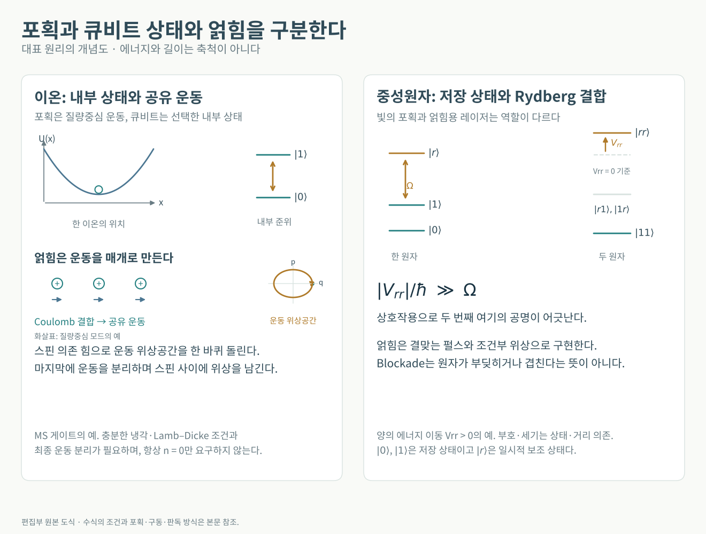
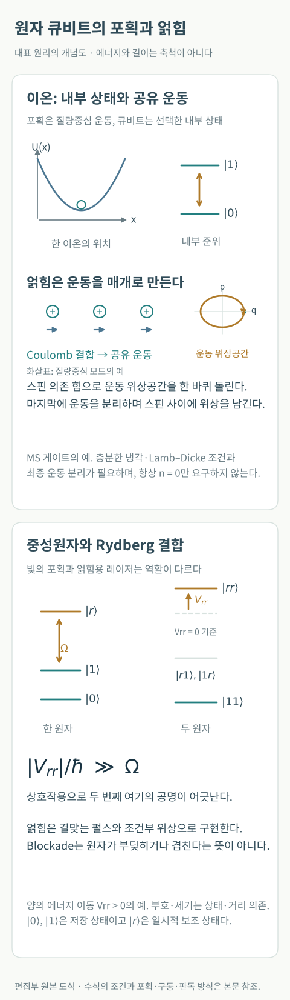
논문이 보여주는 현위치
배열 규모에서는 A tweezer array with 6,100 highly coherent atomic qubits가 6,100개 물리 원자와 12.6(1) s의 결맞음 시간을 보고했다. Continuous operation of a coherent 3,000-qubit system는 3,000개 이상 배열을 두 시간 넘게 유지하면서 저장된 원자의 결맞음과 재공급의 양립을 보였다. 이 두 결과는 많은 원자를 잘 저장하고 공급하는 능력의 진전이다. 해당 규모의 얽힘 게이트 또는 논리 오류정정 장치로 환산하지 않는다. Nature, 2025년 9월 24일, Nature, 2025년 9월 15일
A fault-tolerant neutral-atom architecture for universal quantum computation는 최대 448개 ⁸⁷Rb 원자의 구역형 구조를 사용했다. 4라운드 surface-code 평가에서 거리 3→5로 늘릴 때 오류가 2.14(13)배 억제되었고, 거리 5에서 후선택 없는 논리 오류는 라운드당 0.62(3)%였다. 이 평가에서는 보조 원자 블록을 저장해 게이트 시퀀스 끝에 측정했다. 별도의 깊은 회로 실험에서는 중간 큐비트 재사용을 보였다. 논리 연산의 일부에는 후선택과 소프트웨어상의 feed-forward가 포함된다. 범용 오류내성 계산의 구성요소를 발전시킨 논문으로 해석해야 한다. Nature 649의 2026년 논문이지만 실제 온라인 공개일은 2025년 11월 10일이다. Nature
비Clifford 자원의 공급도 이미 실험 대상이다. Experimental demonstration of logical magic state distillation는 거리 3·5 color code에서 5-to-1 논리 마법상태 증류를 시연했다. 따라서 다음 과제는 최초 시연 자체에 이어, 더 깊은 계산에 필요한 상태를 충분한 정확도와 채택률로 계속 공급하고 재시도 비용까지 줄이는 일이다. Nature, 온라인 공개 2025년 7월 14일
2026년 6월 2일 사전공개된 Quantum error correction with the toric code는 중간 측정·초기화, 원자 손실 교체와 저장소 재공급을 결합했다. 데이터+보조 원자가 32개 또는 64개인 메모리를 각각 최대 90 또는 70주기 실행했다. 4주기 시점에서 X·Z 논리 관측량을 평균한 코드 확대의 오류 억제계수는 1.30(3)배였다. 그러나 장시간 실행의 Z 논리 오류는 작은 코드에서 주기당 0.63(3)%, 큰 코드에서 0.64(4)%로 큰 코드의 추가 억제가 유지되지 않았다. 지속 운영의 성과와 남은 오류 누적 문제가 동시에 드러난다. arXiv 사전공개
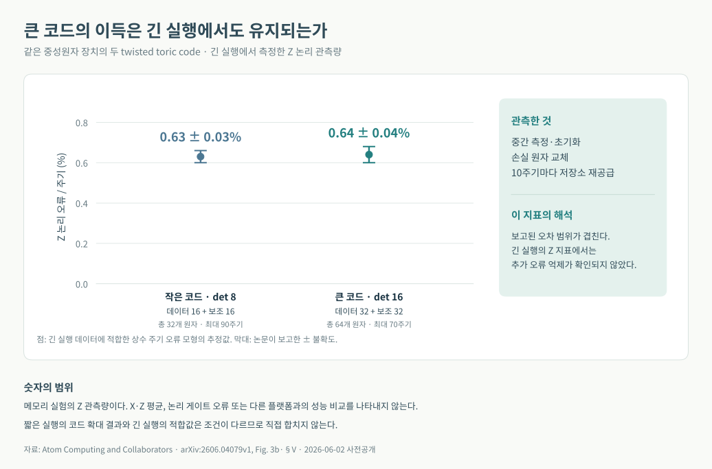
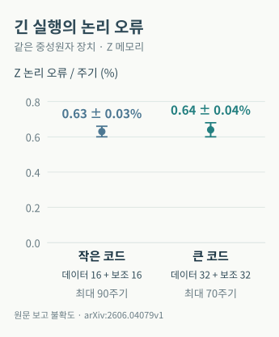
2026년 6월 12일 출판된 Logical qubits with erasure conversion using metastable neutral atoms는 ¹⁷¹Yb의 준안정 핵스핀 상태에서 오류를 위치가 알려지는 소거(erasure) 오류로 전환·검출했다. 이는 원자 자체의 손실뿐 아니라 부호화 공간 밖으로의 검출 가능한 누설도 포함한다. [[4,2,2]] 부호가 임의의 단일 Pauli 오류는 정정하지 못해도, 위치를 아는 한 개의 소거 오류는 복구할 수 있다는 차이를 활용한다. 같은 날 출판된 High-fidelity entanglement and coherent multi-qubit mapping in an atom array는 여러 원자 내부 부호화 사이의 얽힘 전달과 최대 20원자 GHZ를 보였다. 후자의 두 큐비트 게이트 충실도 99.78(4)%는 소실을 검출한 조건부 수치다. Nature Physics 소거 전환, Nature Physics 얽힘 전달
확장 과제
큰 배열은 확장의 출발점이다. 그 전체에서 높은 게이트 충실도를 유지하려면 레이저 위상·세기·주파수 잡음, 원자의 잔류 운동, Rydberg 수명, 의도하지 않은 상호작용과 누설을 줄여야 한다. 재배치는 연결을 바꾸는 장점인 동시에 이동시간과 추가 오류의 원인이다.
가장 구조적인 과제는 원자 손실이다. 계산이 길어지면 손실을 찾아 새 원자를 넣고 초기화하며, 주변의 양자정보를 보존해야 한다. 소실 위치를 알 수 있다는 장점은 이를 정확히 검출할 때 생긴다. 판독 중 광산란이 이웃 큐비트에 주는 영향, 보조 원자의 재사용, 보충 속도가 논리 연산의 지속시간을 결정한다. 짧은 코드 확대 시연과 장시간 재공급 시연이 하나의 계산 안에서 결합되는지를 보아야 한다.
초전도 회로
Transmon과 fluxonium
초전도 큐비트가 다루는 것은 초전도 응축체와 회로의 집단 전자기 자유도다. 축전기의 전하와 접합 양단의 초전도 위상차를 양자화하면 에너지 준위가 생긴다. 선형 LC 진동자는 준위 간격이 같아서 한 주파수로 0↔1 전이만 골라 구동하기 어렵다. Josephson 접합의 코사인형 에너지는 이 등간격을 깨뜨리며, 그중 두 준위를 계산 공간으로 선택하게 한다. 공진기와의 결합을 잠시 제외한 단일 접합 회로의 기본 모형은 다음과 같다. Koch 등의 원 논문
$$ \begin{gathered} \hat H_{\mathrm T}=4E_C(\hat n-n_g)^2-E_J\cos\hat\varphi,\\ [\hat\varphi,\hat n]=i,\qquad E_C=\frac{e^2}{2C_\Sigma}. \end{gathered} $$여기서 $\hat n$은 초전도 섬의 초과 전하를 $2e$ 단위로 표현한 정수 Cooper 쌍 수 연산자, $n_g$는 $2e$ 단위의 오프셋 전하, $\varphi$는 무차원 위상차다. $C_\Sigma$는 유효 총 정전용량이며, $E_J$는 Josephson 에너지다. Transmon은 $E_J/E_C\gg1$로 설계한 이 회로의 동작 영역이다. 큰 병렬 정전용량으로 $E_C$를 낮추면 낮은 준위의 전하 분산이 $\exp[-\sqrt{8E_J/E_C}]$에 비례하는 인자로 억제된다. 반면 비조화도 $\omega_{12}-\omega_{01}$는 저준위 근사에서 $-E_C/\hbar$ 정도로 남는다. 따라서 전하 잡음에 대한 안정성과 전이 선택성을 함께 얻되, 정전용량을 무한히 키울 수는 없다. 이 근사는 낮은 준위와 큰 에너지 비율에 해당한다. Koch 등의 해밀토니언·점근식
Fluxonium은 작은 Josephson 접합을 매우 큰 인덕턴스인 superinductor로 병렬 연결한다. 접합 배열의 내부 모드를 동결하고 유효 선형 인덕터 $L$로 볼 수 있는 저에너지 모형에서는
$$ \begin{aligned} \hat H_{\mathrm F}&=4E_C\hat n^2-E_J\cos\hat\varphi\\ &\quad+\frac{E_L}{2}(\hat\varphi-\varphi_{\rm ext})^2. \end{aligned} $$ $$ \begin{gathered} E_L=\frac{(\Phi_0/2\pi)^2}{L},\\ \varphi_{\rm ext}=2\pi\frac{\Phi_{\rm ext}}{\Phi_0},\qquad \Phi_0=\frac{h}{2e}. \end{gathered} $$여기서 $\varphi$는 접합 위상이며 루프의 방향을 골라 인덕터 항을 $(\varphi-\varphi_{\rm ext})^2$로 썼다. 외부자속의 부호는 그 방향 관례에 따른다. 위상의 원점을 옮기면 외부자속을 코사인 항에 넣는 동등한 표기도 가능하다. 인덕터가 연결된 이 유효 모형의 $n=Q/(2e)$는 연속 스펙트럼의 공액 전하 변수이며, 앞 transmon의 정수 전하 기저와 구분한다. 이상적인 인덕턴스는 정적 오프셋 전하 민감도를 제거하면서도 강한 비조화 스펙트럼을 허용한다. 외부자속에 따른 준위·전이 행렬원소, 유전체 손실과 접합 배열의 기생 모드는 별도로 관리해야 한다. Manucharyan 등의 fluxonium 원 논문과 보충자료
연산에서는 공명하는 마이크로파 펄스로 두 준위 사이의 진폭과 상대위상을 제어하고, 두 회로의 직접 결합·공진기·가변 결합기로 얽힘을 만든다. 계산 공간은 실제로 다준위계의 일부이므로 펄스가 너무 강하거나 넓은 주파수 성분을 가지면 $|2\rangle$ 이상으로 누설된다. 특히 transmon의 약한 비조화도는 빠른 게이트와 누설 억제 사이의 절충을 만든다. 비조화도가 큰 설계도 원하는 전이의 결합 세기와 다른 준위의 영향을 함께 최적화해야 한다. Koch 등의 전이 선택성 분석
판독은 대개 큐비트와 주파수를 충분히 떨어뜨린 공진기의 상태 의존적 분산 응답을 이용한다. 큐비트 상태에 따라 공진 주파수가 조금 달라지므로 입사 마이크로파의 반사·투과 진폭과 위상을 증폭해 분류한다. 한 번의 측정은 선택한 관측량의 결과를 주며, 파동함수의 복소 진폭을 직접 촬영하지 않는다. 상대위상까지 재구성하려면 준비·기저 회전·반복 측정이 필요하다. 양자 비파괴 판독도 분산 근사와 적절한 측정 세기 아래의 성질이며, 실제 판독에는 완화·측정 유도 전이·오분류가 남는다. Blais 등의 분산 판독 제안
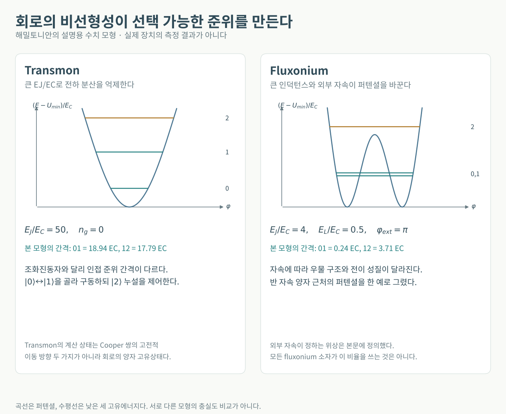
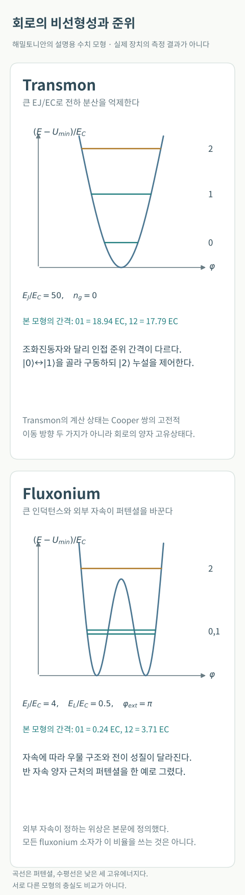
논문이 보여주는 현위치
Google의 Quantum error correction below the surface code threshold는 Willow에서 거리 7의 101개 물리 큐비트 메모리를 구현했다. 코드 거리를 2 늘릴 때 오류 억제계수는 2.14 ± 0.02였고, 거리 7 논리 오류는 주기당 0.143 ± 0.003%였다. 논리 수명은 가장 좋은 구성 물리 큐비트보다 2.4 ± 0.3배 길었다. 거리 5에서는 실시간 디코더도 결합했다. 이는 반복 surface-code 메모리의 중요한 기준이다. 온라인 공개는 2024년 12월 9일, 권호는 Nature 638의 2025년이다. 2026년 정정은 그림 3a의 반복 부호 관련 표기를 고쳤다. 논문, 정정
2026년 7월 8일의 Reinforcement learning control of quantum error correction는 오류 검출 신호를 보정의 학습 신호로도 썼다. 거리 7 surface-code 메모리의 평균 논리 오류는 주기당 7.72(9) × 10⁻⁴, 즉 약 0.0772%였다. 주입한 드리프트에 대해 제어와 디코더 조정을 함께 적용했을 때 논리 안정성이 3.5배 개선되었다. 그러나 실험은 매 실행마다 상태를 다시 준비한 짧은 메모리들을 반복했다. 하나의 긴 알고리즘을 중단 없이 보정하며 수행하는 확장 가능성은 시뮬레이션과 구분해야 한다. Nature
게이트 수준에서는 24 Days-Stable CNOT Gate on Fluxonium Qubits with Over 99.9% Fidelity가 두 fluxonium의 60 ns CNOT를 보고했다. 최고 충실도는 99.94%, 재보정 없이 24일 동안 99.9% 이상이었다. 이는 안정적인 빠른 게이트의 중요한 사례이며 다수 큐비트 배열의 반복 오류정정 성과와는 다른 단계다. PRX Quantum, 2025년 3월 11일
재료 개선과 논리 처리도 병행된다. Millisecond lifetimes and coherence times in 2D transmon qubits는 최고 T₁ 1.68 ms를 보고했다. Scaling and logic in the colour code on a superconducting quantum processor는 코드 확대와 transversal Clifford 연산, magic-state injection, 논리 teleportation을 결합했다. 반면 2026년 heavy-hex 실험 Surface code scaling on heavy-hex superconducting quantum processors는 일부 방향의 오류 억제를 보였으나, 기저에 무관한 below-threshold scaling의 충분한 증거는 없다고 명시했다. 같은 초전도 플랫폼 안에서도 재료·연결·부호와 측정 조건이 결과를 바꾼다. Nature 재료 연구, 2025년 11월 5일, Nature color code, 2025년 5월 26일, Nature Communications, 2026년 7월 29일
확장 과제
이제 중요한 검증은 좋은 논리 메모리 여러 개를 연결해 연산하면서 같은 억제를 유지하는 것이다. 측정과 초기화가 데이터에 미치는 영향, lattice surgery, 비Clifford 상태 공급, 고전 제어기의 처리량을 함께 계산해야 한다. 빠른 물리 게이트가 있어도 제어 분기나 논리 연산의 라운드 수가 크면 전체 알고리즘은 느려질 수 있다.
집적 규모가 커지면 배선 수와 냉각부의 열부하, 제조 수율, 자동 보정이 중요해진다. 특히 드문 큰 상관 오류가 논리 오류의 바닥을 만들면 단순히 코드만 크게 하는 방식은 효과가 제한된다. 평균 충실도의 개선과 함께 오류 분포의 꼬리를 검증해야 한다.
보소닉 큐비트와 소실을 활용하는 부호화
진동자의 공간을 활용하는 이유
보소닉 부호화는 진동자의 광자 수 상태 $|0\rangle,|1\rangle,|2\rangle,\ldots$와 위상공간 안에서 두 차원 부분공간을 논리 큐비트로 정한다. 회로와 부호화는 별개의 선택이므로 cat·GKP·dual-rail은 transmon·fluxonium과 다른 분류 층이다. 공진기가 오래 살아도 상태 준비·비선형 연산·신드롬 판독에는 보조 큐비트나 구동·소산 공학이 필요하며 이들도 오류를 만든다. Teoh 등의 보소닉 회로 설계
Cat 계열에서 $|\alpha\rangle$는 광자 소멸 연산자 $\hat a$의 고유값이 복소수 $\alpha$인 결맞음 상태다. 아래 두 성분 cat의 식에서는 $\alpha\ne0$으로 둔다. 서로 반대 위상의 두 결맞음 상태로부터 정규직교한 홀짝 상태를 만들 수 있다.
$$ |C_\alpha^\pm\rangle= \frac{|\alpha\rangle\pm|-\alpha\rangle} {\sqrt{2(1\pm e^{-2|\alpha|^2})}}, \qquad \hat a|\pm\alpha\rangle=\pm\alpha|\pm\alpha\rangle. $$두 광자 구동·소산을 조합하면 이 공간을 안정화한다. 홀짝 cat을 논리 0·1로 쓰는 관례와 $|\pm\alpha\rangle$에 가까운 상태를 쓰는 관례는 다르다. 유한한 $|\alpha|$에서 두 결맞음 상태는 겹치므로 후자의 표기는 근사다. 광자 하나의 손실은 홀짝 기저에서는 두 상태를 교환하고, 충분히 분리된 결맞음 상태 기저에서는 주로 상대부호를 바꾼다. 따라서 ‘비트 반전 억제’에는 논리 기저가 따라야 한다. 후자의 기저에서는 두 상태의 분리를 키우면 비트 반전이 억제되지만 광자 손실에 따른 위상 오류는 증가한다. 이 오류 편향을 바깥 부호로 활용한다. 두 성분 cat의 홀짝 자체는 논리 관측량이므로, 패리티를 측정하면 언제나 정보를 보존하며 손실을 정정한다는 설명도 틀리다. 네 성분 cat 등은 계산 공간과 손실 신드롬 공간을 다르게 구성한다. Mirrahimi 등의 부호·기저 비교, Lescanne 등의 오류 편향 실험
GKP는 진동자의 두 무차원 사분면 $q,p$를 $[q,p]=i$로 정규화했을 때 위상공간 격자에 정보를 담는다. 정사각 격자 부호의 이상적인 위치 파동함수는
$$ \langle q|\mu_L\rangle\propto \sum_{s\in\mathbb Z}\delta\!\left(q-(2s+\mu)\sqrt\pi\right), \qquad \mu=0,1. $$$q,p$를 각각 $\sqrt\pi$로 나눈 나머지에 해당하는 신드롬을 측정해 작은 변위를 되돌린다. 이는 서로 가환하는 격자 변위 안정자 $e^{i2\sqrt\pi q}$와 $e^{-i2\sqrt\pi p}$의 측정이며, 비가환인 $q,p$ 자체를 동시에 무한 정밀도로 읽는 과정이 아니다. 이상적이고 잡음 없는 신드롬 판독에서는 두 축의 변위가 각각 $\sqrt\pi/2$보다 작으면 가장 가까운 격자로 복구할 수 있다. 위 델타 빗살은 정규화되지 않고 무한 에너지를 요구한다. 실험 상태는 유한 폭 피크와 유한 포락선을 가지므로 초기 상태 자체의 불확실성, 측정 잡음과 보정 오류가 논리 오류 확률을 만든다. 또한 광자 손실은 단순한 고정 변위만이 아니라 감쇠와 잡음을 동반하므로, 격자 그림만으로 완전 정정이 보장되지는 않는다. Gottesman–Kitaev–Preskill 원 논문의 부호·유한 압축 분석
Dual-rail은 두 모드 A·B의 총 여기 수가 하나인 공간을 사용한다. 예를 들어 $|0_L\rangle=|1_A0_B\rangle$, $|1_L\rangle=|0_A1_B\rangle$로 정하면, 어느 모드에서든 한 광자가 사라질 때 출력은 $|0_A0_B\rangle$가 된다. 총 광자 수나 공동 패리티를 논리 상태를 구분하지 않게 측정하면 어느 큐비트에서 계산 공간 이탈이 생겼는지 알 수 있다. 이것이 검출된 소거 오류이며, 알려진 위치를 활용하는 바깥 부호가 복구를 담당한다. 각 모드의 점유를 따로 알아내는 것은 논리 판독이다. 검출 누락·오경보, 검출 사이의 복합 사건, 남아 있는 위상 오류는 별도 문제이며, 두 모드의 손실률이 다르면 손실이 검출되지 않은 조건에서도 중첩의 가중치가 변한다. Teoh 등의 dual-rail과 잔류 오류 분석
논문이 보여주는 현위치
Hardware-efficient quantum error correction via concatenated bosonic qubits는 cat 내부에서 bit flip을 억제하고 바깥 반복 부호로 phase flip을 정정했다. 거리 3과 5의 최소 평균 논리 오류는 각각 주기당 1.75(2)%와 1.65(3)%였다. 이 결과는 물리적으로 편향된 오류와 바깥 부호를 결합한 사례다. 긴 bit-flip 수명 하나를 전체 양자 상태의 수명으로 읽으면 안 된다. Nature, 2025년 2월 26일
2026년 9월 22일 사전공개된 Bosonic Error Correction with Fluxonium는 평면형 공진기와 fluxonium 보조 큐비트로 GKP 오류정정을 구현하고 논리 수명을 1.59 ± 0.05배 늘렸다. 큰 3차원 공진기와 다른 집적 경로를 보여 주지만 다중 논리 큐비트의 범용 계산 결과는 아니다. arXiv 사전공개
2026년 8월 5일의 An entangling gate for dual-rail erasure qubits는 각각 두 공진기로 부호화한 두 dual-rail 큐비트 사이에 저장 공진기 총 네 개를 사용해 약 500 ns의 CZ 게이트를 구현했다. 게이트당 소실 오류는 약 0.5%, 남은 Pauli 오류는 0.1% 미만이고 bit flip은 10⁻⁶ 수준이었다. 이 결과의 핵심은 총오류 중 상당 부분을 위치를 알 수 있는 소실로 분리하면서 얽힘 연산을 했다는 점이다. 부호 확대에 따른 오류 억제는 이 논문에서 실험한 전체 오류정정 장치의 결과가 아니라 시뮬레이션이다. Nature
확장 과제
물리적 안정화가 잘 되어도 게이트가 그 유리한 오류 구조를 깨면 이득을 잃는다. 보조 큐비트의 오류가 데이터 모드로 전달되는 과정, 광자 손실의 검출 누락, 위상 오류, 큰 진동자 상태의 제어 비용을 줄여야 한다. 다음 성과는 메모리 수명 향상과 논리 게이트 정확도, 공진기 간 연결을 같은 실험에서 함께 개선하는 데 있다.
반도체 전자와 정공과 도너 스핀
반도체 집적의 기회와 제어의 어려움
게이트로 만든 양자점은 전자·정공을 가두고, 자기장은 선택한 저에너지 이중항을 Zeeman 분리한다. 단일 전자 스핀 큐비트는 두 스핀 고유상태를 계산 기저로 쓴다. 궤도·valley 여기를 무시하고, 자기장을 공통 z방향으로 잡으며 교환을 등방적으로 근사하면
$$ \hat H_{\rm spin}=\sum_i g_i\mu_B B_i\hat s_i^z +\sum_{\langle ij\rangle}J_{ij}(t)\,\hat{\boldsymbol s}_i\!\cdot\!\hat{\boldsymbol s}_j, \qquad \hat{\boldsymbol s}=\frac{\boldsymbol\sigma}{2}. $$$\boldsymbol\sigma$는 Pauli 행렬, $g_i$는 유효 g인자, $\mu_B$는 Bohr 자기자다. 스핀 연산자는 무차원이고 $J$는 에너지다. 정공은 스핀–궤도 결합이 섞인 유효 스핀 이중항이며, 방향 의존 g텐서와 비등방 교환이 필요할 수 있다. Loss–DiVincenzo의 모형, 정공의 비등방 교환 실험
가상 터널링·Coulomb 에너지·페르미온의 교환 대칭성으로 singlet와 triplet의 에너지가 달라진다. 이 차이가 교환 결합 $J$다. 단순한 두 자리 Hubbard 모형의 대칭점에서는 $J\simeq4t_c^2/U$이며, $t_c$는 터널 진폭, $U$는 이중 점유 비용이다. 이는 $t_c\ll U$이고 높은 궤도와 복잡한 Coulomb 항을 무시하는 근사다. 게이트 전압으로 $J$를 조절해 얽힘을 만들지만, 전하 잡음도 교환 변동으로 전달된다. Loss–DiVincenzo의 적용 조건
ESR은 정자기장에 수직인 교류 자기장으로 회전을 구동한다. Koppens 등의 ESR 실험 EDSR은 교류 전기장을 쓰되 전기장과 스핀을 연결하는 과정이 필요하다. 스핀–궤도 결합은 전기적으로 움직이는 궤도와 스핀을 연결한다. Micromagnet 방식은 정적 자기장 구배 속에서 전하를 흔들어 유효 교류 자기장을 만든다. Ge 정공의 강한 스핀–궤도 결합은 빠른 전기적 제어와 함께, 동작점에 따라 전하 잡음을 스핀 주파수에 전달할 경로도 제공한다. Nowack 등의 스핀–궤도 EDSR, Pioro-Ladrière 등의 micromagnet EDSR, Ge 정공 제어
판독은 스핀을 전하로 변환해 센서로 검출한다. 에너지 선택 터널링은 한 Zeeman 상태만 저장고로 빠져나가도록 준위를 맞춘다. Pauli 스핀 봉쇄는 다른 변환 방법이다. 두 전자 양자점의 낮은 (0,2) 상태가 singlet이면 singlet의 (1,1)→(0,2) 전이는 허용되지만 triplet은 측정 에너지 창 안에 스핀을 보존하며 접근할 최종 상태가 없어 막힌다. 괄호는 두 점의 전자 수다. 이는 singlet–triplet 대칭성의 판독이므로 임의의 단일 스핀 방향을 읽으려면 추가 매핑이 필요하다. Elzerman 등의 에너지 선택 판독, Ono 등의 Pauli 봉쇄
Exchange-only의 대표적인 세 스핀 부호화는 총스핀 1/2 부문의 내부 결합 구조에 한 큐비트를 담고, 이웃 교환 펄스로 논리 회전을 합성한다. 이 부문은 논리 자유도와 총스핀 투영의 게이지 자유도를 함께 가지므로, 투영을 고정하거나 게이지를 논리 정보와 분리해 다룬다. 개별 ESR의 필요를 줄이는 대신 세 스핀, 긴 펄스열과 누설 관리가 필요하다. 따라서 양자점·전자 수와 계산 큐비트 수를 구분해야 한다. DiVincenzo 등의 exchange-only 제안
실리콘 도너에서는 불순물 원자가 묶어 둔 전자와 도너 핵스핀을 함께 활용한다. 예를 들어 $^{31}\mathrm P$는 핵스핀 1/2이며, 전자·핵의 접촉 초미세 결합은 다음처럼 쓸 수 있다.
$$ \hat H_{\rm D}=g_e\mu_BB\hat s_z-g_n\mu_NB\hat I_z +A\,\hat{\boldsymbol s}\cdot\hat{\boldsymbol I}. $$$\boldsymbol I$도 무차원이며 $A$는 에너지, $g_n\mu_N$은 핵의 자기모멘트 계수다. $A$를 Hz로 제시한 문헌은 위 식에서 $hA$로 환산해야 한다. 전자 Zeeman 에너지가 초미세 결합보다 크면 전자·핵 곱상태가 좋은 근사다. 전자 ESR과 핵 NMR로 각 자유도를 제어한다. 핵 상태에 따른 전자 공명 차이로 핵 정보를 전자에 매핑해 전하 판독으로 읽는다. 전자는 제어·판독·결합 자원, 핵은 저장·계산 큐비트가 된다. $^{28}\mathrm{Si}$ 정제는 주변 $^{29}\mathrm{Si}$ 핵스핀 잡음을 줄이며 계면·전하·valley 문제는 남는다. Kane의 도너 제안, Pla 등의 핵스핀 판독, 정제 Si 양자점
논문이 보여주는 현위치
2026년 10월 15일 출판된 Simultaneous high-fidelity single-qubit gates in a spin qubit array는 5개 실리콘 스핀에서 공동 마이크로파 제어의 간섭을 보정했다. 최대 3개 동시 단일 큐비트 게이트는 99.99% 이상, 5개 동시는 99.9% 이상이었다. 개별 소자의 좋은 정확도를 동시 운용으로 넓혔다는 점이 중요하다. 이 수치는 단일 큐비트 게이트에 해당한다. Nature Physics
2026년 7월 29일의 Weight-four parity checks in a spin-shuttling architecture는 이동 가능한 스핀과 네 개 정류장을 이용한 유효 5큐비트 장치를 보였다. 가중치 4까지의 X·Z 패리티 측정과 5스핀 GHZ 얽힘을 구현했다. surface code에 필요한 연결의 구성요소를 검증한 결과이며, 완전한 surface-code 메모리의 반복 오류정정 시연은 아니다. Nature
같은 날 출판된 A digitally controlled silicon quantum processing unit는 54개 양자점을 최대 18개 exchange-only 큐비트로 구성할 수 있는 장치와 4 K CMOS 제어를 연결했다. 큐비트 하나에 전자 스핀 세 개를 쓰므로 54개 양자점과 54개 독립 계산 큐비트도 다르다. 거리 5의 고전적 반복 부호를 최대 200라운드 측정하고 거리 증가에 따른 4.7배 오류 억제를 보였다. [[4,2,2]] 양자 오류검출의 3라운드 후 충실도는 약 0.95였지만 약 77%의 실행을 버렸다. 제어 통합과 반복 측정의 성과를 두 오류축 전체의 무조건 오류정정과 구분해야 한다. Nature, 저자 공개본
2026년 3월 23일의 Universal logical operations in a silicon quantum processor는 인 도너의 핵스핀 다섯 개로 [[4,2,2]] 부호의 두 논리 큐비트를 구성하고 논리 연산과 작은 물 분자 VQE를 보였다. 중간 측정 대신 끝의 파괴적 패리티 판독과 후처리를 사용했고 T 연산에는 후선택이 포함된다. 실험의 논리 S 게이트는 비내고장성이었다. 임의의 단일 오류를 정정하는 부호가 아니며 논리 결맞음도 물리 평균보다 짧았다. 부호화 연산의 출현을 보여 주는 논문이다. Nature Nanotechnology
제조 측면의 Industry-compatible silicon spin-qubit unit cells exceeding 99% fidelity는 300 mm 산업 공정의 네 개 2큐비트 소자에서 단일·이중 게이트 충실도 99% 이상을 보였다. Ge의 Robust and localised control of a 10-spin qubit array in germanium는 10개 정공 스핀의 국소 단일 큐비트 제어를 발전시켰다. 전자는 제조 경로, 후자는 정공과 전기적 제어의 대안이다. 각각 수백만 큐비트 운영이나 10큐비트 오류정정의 증거로 확대해서 읽지는 않는다. Nature, 2025년 9월 24일, Nature Communications, 2025년 11월 26일
확장 과제
스핀의 다음 단계는 여러 큐비트에서 동시에 좋은 단일·이중 게이트, 빠르고 비파괴적인 판독, 재초기화, 반복 안정자 측정을 결합하는 것이다. 이동형 구조는 정밀한 결합기를 모든 이웃에 두는 부담을 줄일 수 있지만 이동 중 상태 보존과 경로 보정이 필요하다. 극저온 CMOS의 전력, 열과 신호 품질도 전체 규모를 제한한다.
실리콘에서는 부호화된 논리 연산이 시연되었다. 다음 평가는 부호가 처리하는 오류의 범위와 후선택 없는 보호의 지속시간을 기준으로 해야 한다.
광자
이산변수와 연속변수
광학 모드는 공간 경로·편광·도착 시간 등으로 구별하는 전자기장의 진동 자유도다. 한 모드의 광자 수 상태인 Fock 상태 $|n\rangle$에서 $n=0,1,2,\ldots$는 그 모드의 여기 수다. 따라서 모드·광자·큐비트는 서로 다른 자원 단위다. 대표적인 이산변수(DV) 방식인 dual-rail은 서로 직교하는 두 모드 $a,b$의 총광자 수가 하나인 부분공간을 선택한다.
$$ |0_L\rangle=|1\rangle_a|0\rangle_b,\qquad |1_L\rangle=|0\rangle_a|1\rangle_b,\qquad |\psi\rangle=\alpha|10\rangle+\beta|01\rangle, \quad |\alpha|^2+|\beta|^2=1. $$여기서 $|10\rangle$의 숫자는 광자 수이고 $|0_L\rangle$의 0은 논리 상태의 이름이다. 두 레일은 두 경로뿐 아니라 수평·수직 편광이나 이른·늦은 시간 구간일 수도 있다. 광자를 잃어 생긴 $|00\rangle$는 부호공간을 벗어난 상태다. KLM 원 논문, 부호화와 광학 소자
빔분할기와 위상기는 생성연산자를 $a_j^\dagger\mapsto\sum_k U_{kj}a_k^\dagger$처럼 선형으로 섞는다. 손실 없는 두 모드에서는 이 변환과 위상 조절로 위의 한 큐비트에 임의의 회전을 줄 수 있다. 그러나 수동 선형광학의 간섭만으로, 서로 독립적으로 부호화한 두 광자 큐비트 사이에 결정론적인 얽힘 게이트를 구현할 수는 없다. 광자가 한 빔분할기에서 간섭한다는 사실은 이 조건을 충족하지 않는다. KLM 방식은 보조 광자와 검출 결과에 조건을 건 연산으로 유효 비선형성을 만들고, 성공을 알리는 헤럴딩·상태 준비·feed-forward를 사용한다. Fusion 방식은 작은 얽힘 자원의 일부 광자를 함께 측정해 남은 자원 사이의 연결을 만들며, 실패 사건과 소모 광자까지 자원량에 포함한다. KLM, Browne–Rudolph의 fusion 제안
연속변수(CV) 방식은 모드의 전체 진동자 공간에서 두 직교 quadrature를 다룬다. 무차원 정규화를 다음처럼 고정하면
$$ \hat q=\frac{a+a^\dagger}{\sqrt2},\qquad \hat p=\frac{a-a^\dagger}{i\sqrt2},\qquad [\hat q,\hat p]=i,\qquad \Delta q\,\Delta p\ge\frac12. $$$q,p$는 광자의 실제 위치·운동량이 아니라 광장 진폭의 두 위상 성분이다. 진공의 두 분산은 각각 $1/2$다. 이상적인 순수 squeezed vacuum의 축을 $q$에 맞추면 $(\Delta q)^2=e^{-2r}/2$, $(\Delta p)^2=e^{2r}/2$로, 한쪽 잡음을 줄이는 대신 다른 쪽을 늘린다. 서로 다른 압축광을 간섭시켜 얽힌 Gaussian cluster를 만들고, homodyne으로 선택한 quadrature를 측정하며 결과를 되먹임할 수 있다. 실제 유한 squeezing은 정보가 전파될 때 추가 잡음을 남긴다. CV cluster 원 논문, 정규화와 유한 squeezing
Gaussian 상태·Gaussian 연산·Gaussian 측정만으로 구성한 과정은 효율적인 고전 모사가 가능하므로 보편 계산에는 그 집합을 벗어나는 자원이 필요하다. 광자수 측정, 비선형 위상 연산, 비Gaussian GKP 자원은 그 경로의 예다. GKP는 한 모드의 위상공간 격자에 두 상태를 부호화하며 작은 변위 오류를 검출한다. 실험 상태의 봉우리는 유한 폭을 가지며, 보편적인 부호화 계산에는 적절한 비Clifford 자원도 갖춰야 한다. 따라서 모드 수나 squeezing 수치만으로 논리 큐비트 수·보편 계산 능력을 정할 수 없다. Gaussian 과정의 고전 모사 정리, GKP 원 논문
논문이 보여주는 현위치
A manufacturable platform for photonic quantum computing는 300 mm 공정 기반 광학 모듈에서 dual-rail 준비·측정 충실도 99.98 ± 0.01%, fusion Bell 상태 충실도 99.22 ± 0.12% 등을 보고했다. 이 충실도들은 검출 성공 조건부이며 손실은 제외한다. 따라서 이 값을 전체 성공률이나 손실을 포함한 논리 오류로 읽으면 안 된다. Nature, 2025
Aurora의 Scaling and networking a modular photonic quantum computer는 84개 squeezer와 36개 광자수 분해 검출기, 네 개 랙을 연결하고 실시간 decoding과 feed-forward를 결합했다. 주기당 12개 공간 모드에 시간 방향의 상태를 계속 생성한다. 2시간 동안 누적된 864억 모드는 동시에 보존되는 독립 논리 큐비트 수가 아니다. 실험의 큰 광손실과 GKP 상태 품질은 아직 논리 오류 억제에 필요한 수준과 차이가 있다. Nature, 2025
Integrated photonic source of Gottesman–Kitaev–Preskill qubits는 300 mm SiN 칩과 광자수 분해 검출로 광학 GKP 자원을 생성했다. 두 축에서 여러 봉우리와 비고전적인 Wigner 음수 구조를 보였으며, 실용적인 오류정정에는 더 나은 손실 관리가 필요하다. 생성된 GKP 상태와 오류정정으로 수명이 늘어난 논리 메모리는 서로 다른 성취다. Nature, 2025년 6월 4일
2026년 7월 31일 출판된 Clavina의 Extensible universal photonic quantum computing with nonlinearity는 시간 구간 회로에 비선형 모듈을 더하고 실시간 feed-forward를 구현했다. 250 kHz 운전에서 초당 약 2,000개 GKP 상태를 생성했다. 저자의 ‘quasi-deterministic’ 표현에는 잡음이 큰 homodyne 결과를 거르는 절차가 포함된다. 비선형 자원을 회로에 통합한 진전이며 오류내성 보편 계산을 완성했다는 의미는 아니다. 더 낮은 손실과 높은 squeezing이 필요하다. Nature Photonics
확장 과제
광자의 가장 큰 손실원은 생성, 결합, 전파, 스위칭, 지연, 검출의 전체 경로다. 전체 투과·검출 효율은 각 단계 효율의 곱으로 정해지므로 좋은 부품 하나만으로 전체 효율이 충분해지지 않는다. 광자 구별 불가능성, 소스의 공급률과 순도, 검출기의 효율과 잘못된 계수, feed-forward 지연도 중요하다.
거대한 광학 cluster state의 모드 수와 오류정정된 논리 큐비트 수를 구분해야 한다. 확장의 관건은 필요한 품질의 얽힘·비Gaussian 자원을 충분한 속도로 공급하면서 손실 문턱 안에서 계산하는지다. 광섬유 연결은 매력적이지만 긴 지연선도 손실을 낳으므로 저장과 스케줄링의 비용이 사라지는 것은 아니다.
결함 중심과 양자 네트워크
전자 스핀과 핵 메모리와 광학 연결
결함 중심은 결정 속 원자 배열과 전하 상태가 만드는 국소 전자 준위를 이용한다. 흔히 쓰는 음전하 다이아몬드 NV$^-$의 바닥상태는 **$S=1$인 스핀 삼중항**이다. 예를 들어 $|0\rangle=|m_s=0\rangle$, $|1\rangle=|m_s=-1\rangle$을 선택하고, 자기장으로 전이를 구별한 뒤 공명 마이크로파로 회전시킨다. 광학 여기와 스핀 의존 형광은 초기화·판독에 쓰인다. 반면 SiV$^-$는 $S=1/2$ 전자와 궤도 자유도가 spin–orbit 결합으로 묶인 준위 구조를 가지므로 NV의 세 준위 그림을 그대로 적용할 수 없다. 변형률·자기장·온도는 SiV의 제어와 광학 선택 규칙, 포논에 의한 결맞음 손실을 함께 바꾼다. NV 레지스터 원 논문, SiV 준위와 제어의 실험 분석
전자와 주변 핵스핀은 초미세 상호작용으로 연결된다.
$$ H_{\rm hf}/\hbar=\mathbf S\cdot\mathbf A\cdot\mathbf I. $$여기서 $\mathbf S,\mathbf I$는 무차원 스핀 연산자이고 $\mathbf A$는 각주파수 단위의 결합 텐서다. 전자 상태에 따라 핵의 세차축·주파수가 달라지는 성질로 조건부 회전과 정보 전달을 구현한다. 전자는 빠른 제어와 광학 접속을, $^{13}$C나 $^{29}$Si 등의 핵은 긴 저장을 맡을 수 있다. 광학 재시도가 핵에 주는 교란도 함께 억제해야 한다. 전자 제어에 의한 핵스핀 게이트
통신에서는 스핀 상태를 방출 또는 반사 광자의 시간 구간·편광 등과 얽히게 한다. 대표적인 NV 경로에서는 두 노드의 광자를 구별 불가능하게 만들어 공동 측정하고, 특정 검출 결과로 남은 스핀의 얽힘 준비 성공을 알린다. 이 헤럴딩은 성공 여부의 정보이며, 링크가 매번 성공한다는 뜻은 아니다. 핵 메모리는 성공한 얽힘을 저장해 다른 연결의 재시도를 기다리는 데 쓰인다. 반드시 ‘전자에서 핵으로 SWAP’하는 한 경로만 있는 것은 아니다. 최근 SiV 구현은 전자와 광학 공진기를 매개로 $^{29}$Si 핵과 광자의 직접 얽힘도 사용한다. NV 원격 얽힘 원 논문, SiV 핵 메모리 네트워크 원 논문
논문이 보여주는 현위치
Entanglement of nanophotonic quantum memory nodes in a telecom network는 다이아몬드 SiV 기반 핵스핀 메모리 노드의 얽힘을 35 km의 설치 광섬유 경로에서 보였다. 이는 광섬유 경로 길이이며 두 장치의 직선거리를 뜻하지 않는다. 메모리와 통신을 결합하는 장점을 보여 준다. Nature, 2024
2026년 5월 26일의 Unconditionally teleported quantum gates between remote solid-state qubit registers는 NV의 광학 연결로 2 m 광섬유로 연결된 핵스핀 레지스터 사이의 CNOT를 수행했다. 이 게이트로 생성한 원격 Bell 상태 충실도는 63(4)%였다. 이는 출력 상태 충실도이며 게이트의 process fidelity와는 다르다. ‘unconditional’은 헤럴딩된 얽힘이 확보된 뒤 중간 측정 결과를 버리지 않고 feed-forward한다는 의미다. 링크 자체의 얽힘 생성이 항상 성공하는 것은 아니다. Nature Communications
국소 레지스터 제어에서도 진전이 있다. Single-gate, multipartite entanglement on a room-temperature quantum register는 상온 NV 전자와 핵스핀 세 개의 4스핀 얽힘 연산을 14.8 μs에 구현했고 충실도는 0.92(4)였다. 상온 국소 제어의 성과이며 극저온 광학 링크의 결과와 구분한다. SiC의 Room-Temperature Storage of Entanglement in a Silicon Carbide Quantum Node는 전자와 두 핵스핀의 국소 저장을 보고한 사전공개 논문이다. 원격 네트워크 구현에 대한 결과는 아니다. Nature Nanotechnology, 2026년 9월 14일, SiC 사전공개, 2026년 9월 12일
확장 과제
핵심 병목은 광자 수집·결합 효율, 서로 다른 결함이 내는 빛의 주파수 일치, 표면 가공에 따른 잡음, 노드마다 다른 핵스핀 배치다. 원격 연산에는 메모리 수명 안에 좋은 얽힘을 공급해야 한다. 헤럴딩은 얽힘 준비의 성공을 알려 주지만 성공률 자체를 100%로 만드는 것은 아니다. 통신용 노드와 계산용 대형 프로세서는 서로 다른 역할을 담당할 수 있다.
분자와 다른 초기 플랫폼
극성 분자의 회전상태를 큐비트로 쓰면 마이크로파로 두 회전준위의 중첩을 만들고, 전기 쌍극자 상호작용으로 $|01\rangle\leftrightarrow|10\rangle$의 회전 여기를 결맞게 교환할 수 있다. 여기서 ‘극성’은 먼저 분자에 고정된 좌표계의 쌍극자 모멘트를 뜻한다. 외부 전기장이 없고 상태가 패리티 고유상태라면 실험실 좌표계의 정적 쌍극자 평균은 0이다. 그래도 서로 다른 패리티의 회전준위를 잇는 전이 쌍극자는 0이 아닐 수 있어 공명 교환과 얽힘이 가능하다. DC 전기장이나 마이크로파 dressing으로 준위를 섞으면 실험실 좌표계의 유효 쌍극자와 상호작용도 조절할 수 있다. Field-linked resonances, 분자/실험실 좌표계 구분, 회전 여기의 쌍극자 교환 관측, Ruttley 등, 회전상태 얽힘의 Hamiltonian
Long-lived entanglement of molecules in magic-wavelength optical tweezers는 극성 분자의 회전 상태를 이용해 초 단위 얽힘을 보였다. Bell 상태 충실도는 0.924, 검출 가능한 누설을 보정하면 0.976이었다. 누설을 오류로 포함한 원값과 검출 가능한 누설을 보정한 값을 구분해야 한다. 분자의 결맞는 상호작용을 입증한 결과이며 큰 범용 프로세서나 반복 오류정정 시연은 아니다. Nature, 2025년 1월 15일
중성 분자는 회전·진동·스핀의 풍부한 구조와 전기 쌍극자 상호작용을 제공한다. 원자보다 내부 상태가 많다는 장점은 냉각·초기화·판독·누설 제어를 어렵게 하는 원인이기도 하다. 전자의 헬륨 표면 포획 등 다른 접근도 연구되지만, 본 비교의 핵심인 다중 큐비트 논리 처리와 반복 오류정정까지의 성숙도를 따로 확인해야 한다.
초전도 flux 큐비트를 쓰는 양자 어닐러와 원자 배열 기반 아날로그 시뮬레이터도 중요한 장치다. 각각 특정 Hamiltonian의 진화나 최적화 문제를 다루는 방식이므로, 보편적 게이트 모델의 오류정정된 논리 큐비트 수와 직접 합산하지 않는다. 특정 실험의 계산 우위 주장도 목표 문제와 가장 좋은 고전 기준선을 기준으로 평가해야 한다.
최근 연구가 바꾸고 있는 판단
첫째, 소자를 만드는 능력에 지속적으로 운영하는 능력이 더해지고 있다. 원자 보충, 이온 이동, 스핀 이동, 오류정정 신호를 이용한 보정이 이 변화의 사례다. 좋은 상태를 한 번 준비하는 실험과 장시간 계산을 운영하는 시스템 사이의 연결이 중요해졌다.
둘째, 오류의 확률과 함께 오류의 형태를 설계한다. 알려진 위치의 소거 오류로 전환하는 원자 부호화, cat의 비대칭 오류, dual-rail의 광자 소실 검출이 그 사례다. 오류를 검출·정정하기 쉬운 형태로 전환하거나 특정 유형으로 편향시키고, 복구하기 어려운 오류를 억제한다. 다른 방식의 ‘오류 0.1%’끼리도 정정 비용이 같지 않을 수 있다.
셋째, 연결 구조와 오류정정부호를 함께 선택한다. 이온의 재배치와 원자의 이동, 스핀 셔틀링은 먼 연결을 제공할 수 있지만 무료는 아니다. qLDPC는 물리 큐비트의 공간 비용을 줄일 가능성이 있으며, 실제 이득에는 연결·디코딩·논리 측정 비용이 포함된다. 2026년 Williamson과 Yoder의 논문은 일반 부호의 논리 측정 보조 자원을 줄이는 이론을 제시했다. 이는 오류정정 메모리의 좋은 부호가 계산 전체에서도 경제적인지 묻는 연구다. Nature Physics, 2026년 4월 2일
넷째, 작은 논리 회로의 성공에서 큰 알고리즘의 실행비용으로 평가가 이동한다. 각 논리 연산에서 독립적으로 계산 실패를 일으키는 오류가 확률 $p_{\mathrm{L}}$로 발생한다고 가정하면, $G$회 연산을 오류 없이 완료할 확률은 다음과 같다.
$$ P_0 = (1-p_{\mathrm{L}})^G \simeq \exp(-G p_{\mathrm{L}}). $$근사는 $p_{\mathrm{L}} \ll 1$인 경우에 적용한다. 예를 들어 $G = 10^8$이고 오류 없이 완료할 확률 90%를 목표로 한다면 $p_{\mathrm{L}}$은 약 $1.05 \times 10^{-9}$ 이하여야 한다. 이는 규모 차이를 보이기 위한 계산이며 메모리 주기당 오류를 게이트당 오류로 그대로 대입해서는 안 된다. 실험의 평균 게이트 불충실도 역시 이 $p_{\mathrm{L}}$과 그대로 동일시할 수 없다. 상관 오류와 재시도는 별도로 모델링해야 한다.
자원 추정은 공정 하나의 고정 상수가 아니다. Gidney의 2025년 RSA-2048 추정은 0.1% 게이트 오류, 1 μs surface-code 주기, 10 μs 제어 반응 등을 가정해 백만 개 미만의 잡음 있는 물리 큐비트와 일주일 미만의 실행을 제시했다. 이는 실험이나 모든 플랫폼의 요구량이 아니라 특정 구조의 자원 추정이다. 부호·산술·상태 공급 방법에 따라 필요한 큐비트와 시간이 바뀐다는 사례로 읽는 것이 적절하다. 사전공개 논문
앞으로 2–3년, 어떤 결과가 판단을 바꾸는가
2027–2029년은 여기서 진행 상황을 관찰하기 위해 잡은 기간이며 출시를 예측한 기간이 아니다. 현재의 우선순위는 이온·초전도·중성원자의 논리 처리 성과가 여러 논리 큐비트의 지속적인 범용 계산으로 이어지는지다. 마요라나에는 보호된 연산의 선결 검증을, 보소닉에는 계산 전체의 자원 절감을, 스핀·광자에는 제조·연결 자산의 논리적 성능 전환을 더 큰 질문으로 둔다.
| 주목할 경로 | 판단을 바꿀 구체적 결과 | 함께 공개되어야 할 비용 |
|---|---|---|
| 이온·초전도·중성원자의 계산 통합 | 여러 논리 큐비트의 연산·측정·분기와 비Clifford 자원 공급을 결합한 긴 실행에서도 오류 억제 유지 | 보정·이동·냉각·손실 교체·상태 준비 재시도를 포함한 시간, 채택률, 유효 논리 연산 수/초 |
| 마요라나의 보호와 제어 | 같은 하드웨어에서 비가환 제어, 다중 소자의 공동 패리티·얽힘, 길이에 따른 보호와 반복 연산 오류의 검증 | 제어·판독 회로를 포함한 소자 수율과 조정 부담, 바깥 오류정정 자원 |
| 보소닉의 오류 구조 활용 | 메모리의 보호 이득이 논리 게이트와 바깥 부호를 통합해도 유지 | 모드·보조 소자·측정·비Clifford 상태 준비까지 포함한 전체 자원 |
| 스핀·광자의 확장 기반 | 병렬 제어·이동·판독 또는 광손실과 상태 공급을 포함해 논리 오류가 억제 | 제조 수율·제어 배선·냉각, 검출·스위칭·지연선과 실패 재시도 |
| 결함 중심 등 통신·메모리 경로 | 여러 노드에 메모리 수명 안에서 충분히 좋은 얽힘과 원격 연산을 지속 공급 | 링크의 성공 대기·변환·수집 손실과 노드별 편차 |
실현 가능성과 파급력은 별도의 판단이다. 현재의 실험 근거에 더 무게를 두는 경로와, 성공할 때 구현 비용을 크게 바꿀 경로를 함께 추적해야 한다. 자본이 많이 모이는 경로에서도 장치 성능을 따로 검증하고, 높은 충실도도 계산 속도와 운영 부담까지 연결해 읽어야 한다. 같은 목표 알고리즘과 실패 허용치에서 필요한 전체 물리 자원과 실행시간이 이 비교의 공통 기준이다.
문헌의 범위와 최근 논문 목록
확인 기준일은 2026년 10월 19일이다. 기술 평가는 출판사 원문과 저자들의 arXiv 공개본을 중심으로 구성했고, 자본·산업 기반은 공시와 기관·기업의 공식 발표를 대조했다. 동료심사 출판물과 사전공개 논문을 표시했고, 온라인 공개일과 권호 연도가 다른 경우에는 이를 병기했다. 물리 원리는 각 방식의 원형 논문까지 거슬러 설명했다. 최신 논문의 선별 비교이며 모든 플랫폼의 전 문헌을 망라한 체계적 문헌고찰은 아니다.
아래는 2026년에 공개되거나 심사 상태가 갱신된 주요 문헌이다. 첫 공개일 또는 명시한 상태 갱신일 순으로 정렬했다. 핵심 수치와 실험 조건은 해당 절에서 설명했으며, 이론·사전공개·심사 채택을 구별했다.
| 공개·상태 갱신일 | 주요 2026년 문헌 | 상태와 주의점 |
|---|---|---|
| 2월 11일 | 최소 Kitaev 사슬 패리티 판독 | Nature 실험 논문 |
| 2월 25일 | 많은 부호화 논리 큐비트 | 사전공개, 후선택 조건 |
| 3월 4일 | 이온 오류정정 알고리즘 | 사전공개, 비Clifford 비용 포함 |
| 3월 23일 | 실리콘 논리 연산 | Nature Nanotechnology, 오류검출·후처리 |
| 4월 2일 | 일반 부호의 논리 측정 자원 절감 | Nature Physics, 이론 |
| 5월 26일 | 결함 레지스터 간 원격 게이트 | Nature Communications, 얽힘 준비 후의 무후선택 연산 |
| 6월 2일 | 중성원자 toric-code 오류정정 | 사전공개, 장시간 코드 확대 이득의 한계 |
| 6월 2일 | InAs–Pb 패리티 수명 | 사전공개, 패리티와 T₂ 구분 |
| 6월 12일 | 중성원자 소거 전환 | Nature Physics |
| 6월 12일 | 원자 내부 상태 사이 얽힘 전달 | Nature Physics, 조건부 게이트 수치 |
| 6월 17일 | 98큐비트 이온 프로세서 | Nature |
| 6월 24일 | 위상 갭 판별 비판과 답변 | Nature Matters Arising와 Reply |
| 7월 8일 | 오류정정 제어의 강화학습 | Nature, 무중단 긴 계산은 시뮬레이션과 구분 |
| 7월 10일 | 결합한 최소 Kitaev 사슬의 마요라나 패리티 큐비트 | 사전공개, 결맞는 제어와 장거리 위상 보호 구분 |
| 7월 29일 | 실리콘 이동형 패리티 측정 | Nature |
| 7월 29일 | 디지털 제어 실리콘 QPU | Nature, 반복 부호와 양자 오류검출 구분 |
| 7월 29일 | heavy-hex surface-code 확대 | Nature Communications, 비등방적 결과 |
| 7월 31일 | Clavina 비선형 광학 계산 | Nature Photonics, GKP 상태 생성 |
| 8월 5일 | dual-rail 소실 큐비트의 얽힘 게이트 | Nature, 게이트 실험과 QEC 시뮬레이션 구분 |
| 9월 2일 | 이온 C₄-Helix 논리 구조 | 사전공개 |
| 9월 11일 | 분산 이온 컴퓨터의 오류정정 | 사전공개, 10월 15일 v2; 알려진 Bell 상태·검출 재시작 조건 |
| 9월 12일 | SiC 상온 얽힘 저장 | 사전공개, 국소 노드 |
| 9월 14일 | 상온 결함 레지스터의 다중 얽힘 | Nature Nanotechnology |
| 9월 22일 | fluxonium 기반 보소닉 오류정정 | 사전공개 |
| 10월 1일 심사 채택 | 마요라나 tetron X·Z loop 수명 | Physical Review A 채택 원고; 최초 사전공개는 2025년 7월 |
| 10월 8일 | 측정 유도 X 패리티 수명 향상 | 이론 사전공개, 유휴 결맞음의 직접 측정 아님 |
| 10월 12일 | 비보호 연산을 통한 위상 보호 검증법 | 이론 사전공개, 길이·Ramsey 비교 제안 |
| 10월 15일 | 스핀 배열의 동시 단일 큐비트 게이트 | Nature Physics, 단일 큐비트 연산 수치 |